Reachability in generalized NetHack 5.0.0: PSPACE-complete without hunger, NP-complete with it
New to complexity?
For everyone · about 12 minutes · no math needed
How hard is NetHack? A version for everyone
NetHack is an old dungeon game: you walk a hero around a grid, push boulders, eat, and try not to die. This page asks a computer-science question about it and explains the answer in plain words, with things you can play.
Honest label: this is a draft by a student researcher. The proofs have been checked by computer tools and by several rounds of critical review, but no journal or conference has reviewed them yet.
▶ Play the boulder puzzle▶ Which levels? From random to ours▶ Walk a real generated level
1. The question in one picture
If NetHack's dungeon could be as big as you like, how hard is it for a computer to tell whether the hero can reach a spot?
For one small level, a computer can just try everything. Computer scientists ask a different question: as levels get bigger, how fast does the work grow? If it grows gently, the problem counts as easy. If it explodes, the problem counts as hard. The real game has a fixed map size, so for this question we let the map grow and change nothing else in the game's code.
2. Play first: the boulder puzzle
Goal: reach the yellow square. The order of pushes matters.
Boulders move one square when you walk into them, but only straight, never diagonally, and only if the square behind is empty. The line under the map tells you whether the goal can still be reached; one wrong push and it says no, for good. Undo is allowed here (the real game has no undo).
Click the map, then use the arrow keys, or tap the arrow pad.
Stuck? A hint
Look at the lower boulder first. If it ends up on the yellow square against the wall, it can never be pushed off again.
Wait, in NetHack you can slip diagonally past a boulder!
True, on an ordinary level. If you play NetHack you know you can often step diagonally through the gap between a wall and a boulder. In our levels you can't, and this is not a rule we made up: it is a rule the game itself uses on its own Sokoban levels, the boulder-puzzle part of the dungeon.
Every NetHack level can carry a Sokoban flag. Our levels turn it on, exactly as the game does for its Sokoban puzzles. With the flag on, the game treats a boulder like a piece of wall when you try to cut a corner, and it never lets you squeeze between two such pieces. The pictures show every case. You are the @ in the lower left and want to step to the upper right; the two other squares are the “corners” you would have to slip between.
Ordinary level, wall + boulder: allowed. Outside Sokoban a boulder does not count as rock for this rule, so this is not even a tight squeeze.
Ordinary level, wall + wall, light pack: allowed. The hero squeezes through the gap.
Ordinary level, wall + wall, pack over 600: refused. You are carrying too much to get through.
Our levels, wall + boulder: refused: You cannot pass that way. This is the game's own Sokoban rule (its code is shown below): on a Sokoban level a boulder counts as rock, and the hero is never allowed to squeeze.
Our levels, boulder + boulder: refused, same message.
Any level, one corner open: allowed. This is no shortcut: two straight steps through the open corner reach the same square.
Is this really in the game? Here is the game's own code.
Yes. NetHack is open source, and the rule sits in its movement code, in the file src/hack.c of the exact version we study. These are the lines, shortened only by leaving out the parts for monsters and for heroes who can walk through walls (ours cannot); the comments starting with // are ours.
// 1. Is this corner square "bad rock" (something you can't squeeze past)?
bad_rock(x, y):
return (Sokoban && sobj_at(BOULDER, x, y)) // a boulder: ONLY on a Sokoban level
|| IS_OBSTRUCTED(levl[x][y].typ); // wall or solid rock: always
// 2. Both corners are bad rock. Can the hero fit through?
cant_squeeze_thru(hero):
if (bigmonst(hero)) return 1; // "Your body is too large to fit through."
if (carried weight > 600) return 2; // "You are carrying too much to get through."
/* Sokoban restriction applies to hero only */ (the game's own comment)
if (Sokoban) return 3; // "You cannot pass that way."
return 0; // fits: the squeeze succeeds
// 3. In test_move, for every diagonal step:
if (dx && dy && bad_rock(u.ux, y) && bad_rock(x, u.uy)) // both corners bad rock?
if (cant_squeeze_thru(hero) != 0) refuse the step;Walk through the case from the picture, a wall on one corner and a boulder on the other:
- Ordinary level: the wall is bad rock, but the boulder is not (the
Sokoban &&part is false). Only one corner is bad rock, so step 3 never asks the squeeze question. The hero walks through, however much he carries. - Sokoban level: the wall is bad rock and now the boulder is too. Step 3 asks
cant_squeeze_thru, which reaches the lineif (Sokoban) return 3: refused, “You cannot pass that way.” Nothing the hero carries or does changes that.
Players meet this rule in the real game: it applies throughout the Sokoban branch of the dungeon, next to the better-known rule that boulders there cannot be pushed diagonally. All we do is build our levels with the same flag the game puts on its own Sokoban levels, using the game's normal level-file command des.level_flags("sokoban").

The “small opening” trick, and why it fails on our levels
A reader tried this in the real game and got through:
###. . = empty floor
#p0# p = player, 0 = boulder, # = wall
####That is two moves the game allows on an ordinary level with a light pack:
- Walk east into the boulder. It can't move (wall behind it). The game then checks whether you are carrying almost nothing (about 150 weight or less; a fresh character often is). If so: “However, you can squeeze yourself into a small opening.” and you now stand on the boulder's square (
could_move_onto_boulder,hack.c:143-163and304-308). Note: this one works even in Sokoban; the game just records it as cheating. - Step diagonally to the empty square. Both corners are walls, so this is a squeeze; a light hero on an ordinary level fits (the flowchart above ends in “squeezes through”).
On our levels both moves are blocked, by two different things:
- Move 1: our hero carries a cursed loadstone (weight 500, and a cursed one can't be dropped). Far too heavy to squeeze onto a boulder: the push just fails with “You try to move the boulder, but in vain.”
- Move 2: the Sokoban flag refuses every squeeze between two corners: “You cannot pass that way.” (500 is under the 600 weight limit, so the loadstone alone would not stop this one; that is why we need both.)
Both are checked in the real compiled game by our witness tests (W3 for the squeeze, W4 for the heavy hero, each with a control run where the trick does work).
Why we need it. Our levels copy a known puzzle in which a robot walks only in straight lines and pushes blocks. If the hero could slip diagonally between two boulders, he could get past a spot that the robot cannot, and the copy would be wrong. With the flag on, a diagonal step is allowed only when one corner is open, and then it is no shortcut, because two straight steps reach the same square.
Can the flag be switched off? The game switches it off by itself once every pit and hole on the level is filled (that is how it notices a Sokoban puzzle is solved). So every level we build also has one sealed pit that no boulder can ever reach. The flag stays on for good.
Did we check this in the real game? Yes. We loaded test levels into the real, compiled NetHack: with the flag, the diagonal step between two boulders is refused (“You cannot pass that way.”); without the flag, the same step succeeds; and after every other pit is filled, the sealed pit keeps the flag on.
3. From a random NetHack level to ours
Our results are not about every NetHack level. They are about levels of one particular kind, and this part shows exactly which kind. We start from levels the real game made by itself, then remove or fix one thing at a time until only our kind of level is left.
Three levels the game made by itself
We started three fresh games of the real NetHack 5.0.0 and jumped to dungeon level 4. The pictures show the whole level as the game generated it, with nothing changed. (To see the whole map at once we used the game's debugging mode, which can reveal the map and detect objects and monsters; we only looked.)
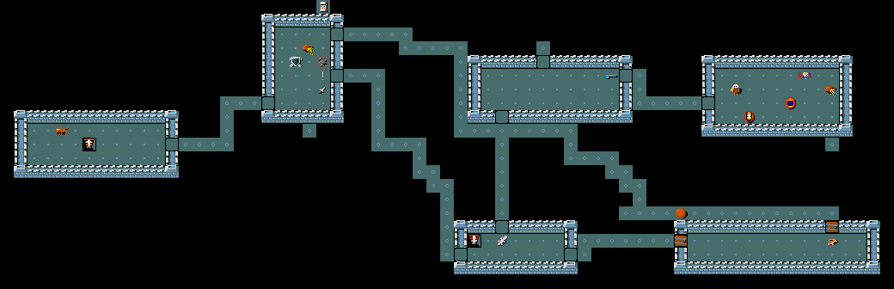
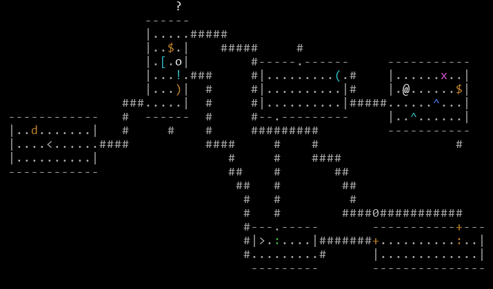
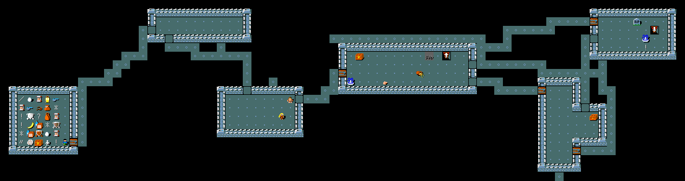
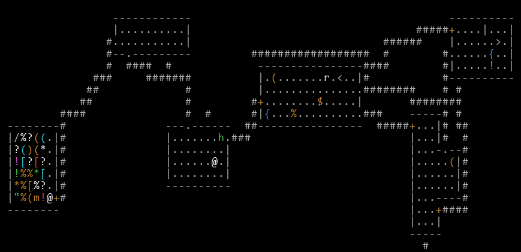


Taking level C apart, one step at a time
Each step removes or fixes one kind of thing and says why. Squares that changed in a step have a red frame.
-
Step 0 The level as the game made it
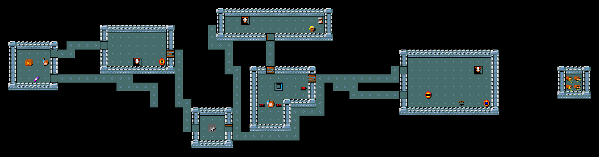
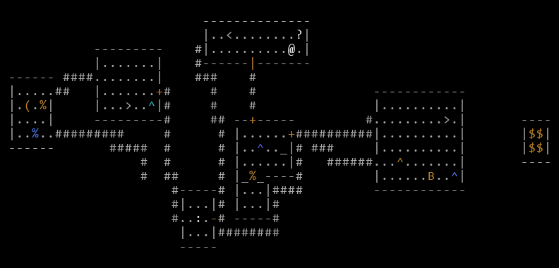
Everything here was placed by the dice: the rooms, the corridors, every item, the traps, the bat. Start a new game and you get a different level.
-
Step 1 No monsters, no pet
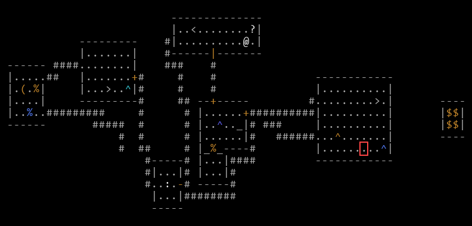
The bat is gone. Monsters move and fight on their own, and a pet could swap places with the hero or slip between boulders. Our level script starts with the game's own switch
nh.debug_flags{mongen=false}, which removes every monster and makes every later monster creation fail, and the hero starts without a pet. -
Step 2 No random items or gold
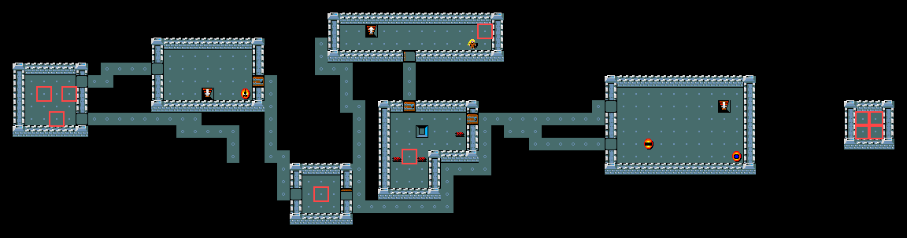
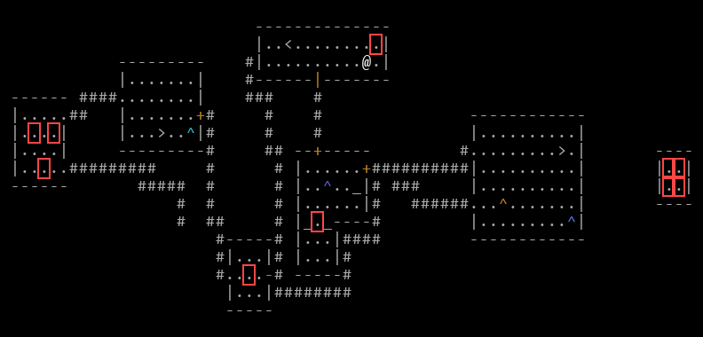
Items give the hero new moves: a wand can dig through walls, a scroll can teleport, food and some rings change the hunger clock. Each would need its own check. Our levels allow only boulders, the loadstone in the hero's pack and, when hunger is on, fortune cookies, each placed by hand on an exact square. Even the random boulders go: ours are placed one by one.
-
Step 3 No altars, fountains, sinks or thrones
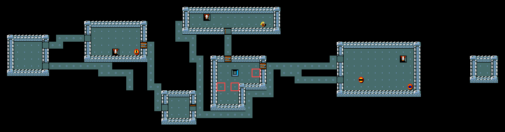
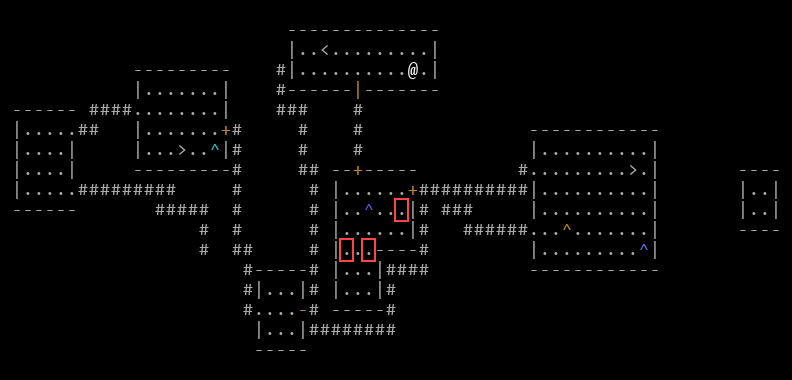
The three altars become floor. This kind of furniture gives extra actions with random results. A throne can grant a wish, and if the player picks the dice (the reading we use) it grants wishes again and again; a fountain can grant a wish too. Altars, sinks and graves are left out because nobody has checked what they could do here.
-
Step 4 Only pits, holes and trapdoors
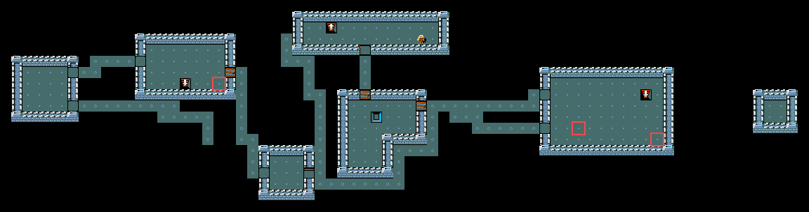
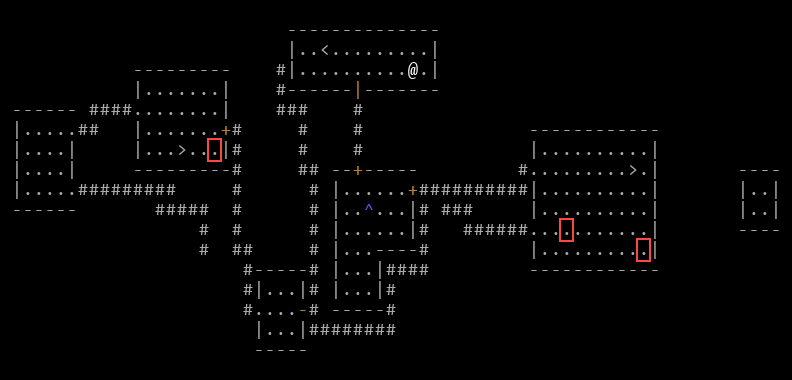
The dart trap, squeaky board and rust trap go; the pit stays. Pits, holes and trapdoors are exactly what a boulder puzzle needs: a boulder pushed in fills them. Other traps can put the hero to sleep again and again (which breaks the hunger clock) or do things nobody has checked line by line.
-
Step 5 No way off the level
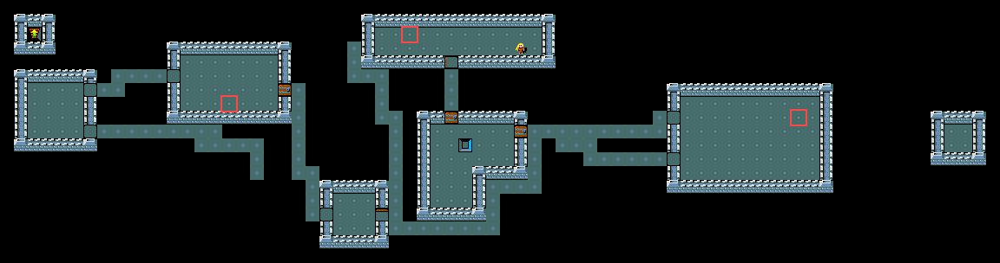
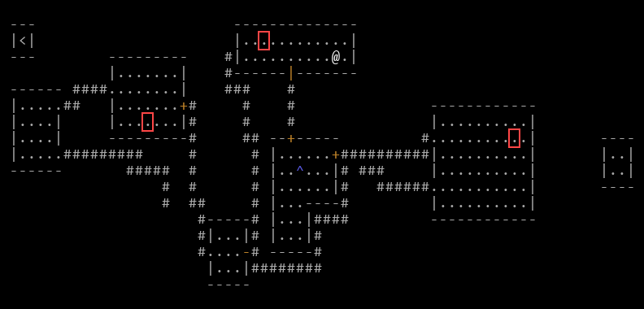
The question is about one level, so leaving it counts as losing. The staircases become floor. The game insists on one staircase on the first level, so every level we build has a sealed one-square pocket (top left) where that staircase must go. Nobody can reach it, so it adds no move. Without the pocket the staircase could land on the hero's start square, and then a lucky prayer could move the hero onto the goal.
-
Step 6 One fixed hero with one cursed loadstone
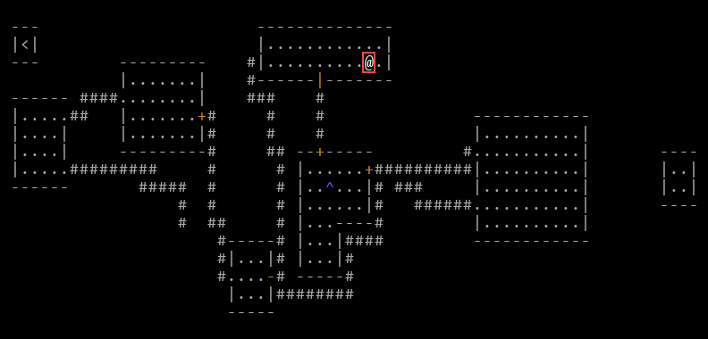
The hero is always the same: a human Valkyrie with no pet, no spells and no special jumps. Her pack is emptied and gets exactly one cursed loadstone. It weighs 500 and a cursed one cannot be dropped, so she is far too heavy to squeeze onto a boulder's square.
-
Step 7 One switch for hunger
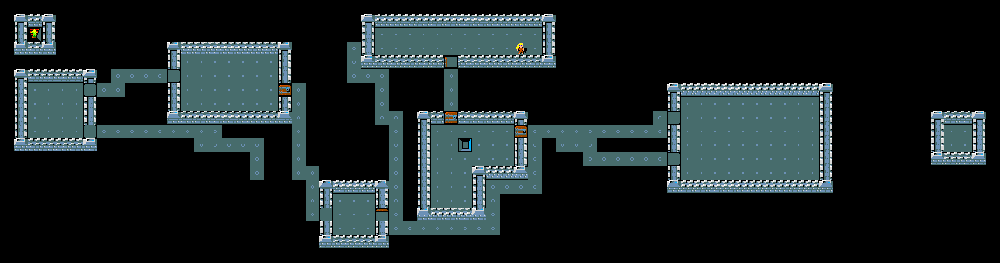
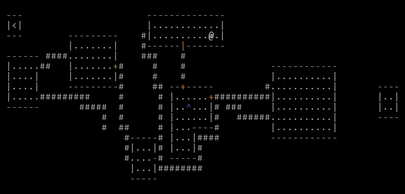
Nothing on the map changes. The script either switches hunger off with
nh.debug_flags{hunger=false}or leaves it on, and that choice picks the result: hunger off, PSPACE-complete; hunger on, NP-complete (with one extra rule: a hero who starves loses). -
Step 8 The Sokoban flag, and a sealed pit to keep it on
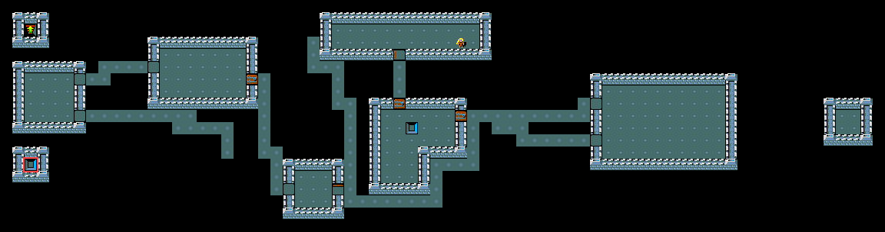
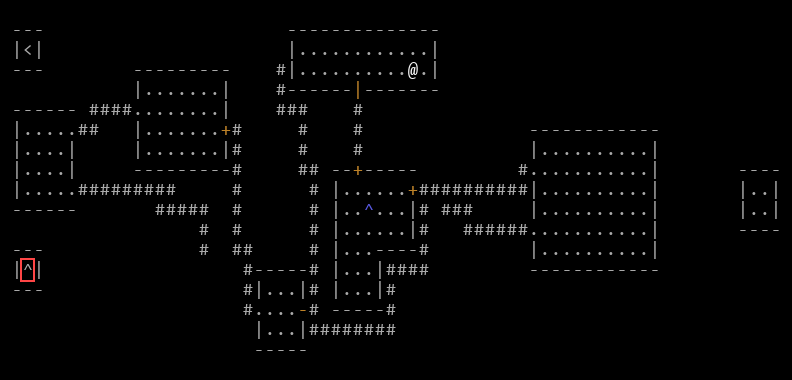
The level gets the game's own Sokoban flag (it does not change how the level looks). With it, boulders move only in straight lines and the hero cannot cut a corner between a boulder and a wall (see above). The game turns the flag off by itself once every pit and hole is filled, so we add one pit that no boulder can ever reach (bottom left). The flag stays on for good.
-
Step 9 No dice at all: every square written by hand
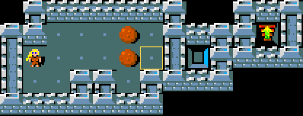
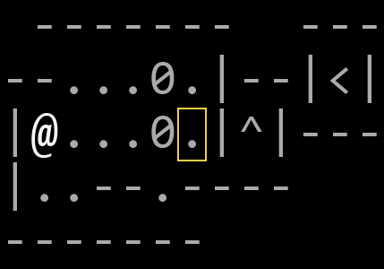
Now the random rooms go too. A level in our problem is not made by the dice at all: it is a short script in NetHack's own level language that names every wall, every floor square and every boulder. This one is the puzzle from Section 2 (goal in yellow), with its sealed pit and staircase pocket. It ran in the real game. The levels our translator builds are the same kind, only much bigger (Section 7).
nh.debug_flags({ mongen = false, hunger = false }) des.level_flags("noflip", "sokoban", "noteleport") des.level_init({ style = "solidfill", fg = " " }) des.map({ x = 1, y = 0, map = [[ ...walls and floor... ]] }) des.object("boulder", 5, 1) des.object("boulder", 5, 2) des.trap("pit", 8, 2) -- sealed: keeps the Sokoban flag on des.levregion({ region = {12,1,12,1}, region_islev = true, type = "branch" }) -- stair pocket des.teleport_region({ region = {2,2,2,2}, region_islev = true, dir = "both" }) -- hero start u.clear_inventory() u.giveobj(obj.new("cursed loadstone"))Shortened from
tools/visual/levels/b_puzzle.lua. The demo file also sets display flags for filming and retries until the hero starts on the right square; those lines are not part of the instance.
The whole menu: what a level can contain, and what we keep
Every kind of thing an ordinary NetHack level can hold, sorted into groups. ✓ kept means our levels may use it; ✕ removed means our levels never contain it; ● fixed means it is always set the same way. Tap or click an item to see the reason.
Terrain
Furniture
Traps
Items
Monsters
Level flags and regions
Hero
Game mode and script
What this means for the results: they are about levels written in NetHack's own level language with exactly these choices. Ordinary levels without the Sokoban flag, where boulders can be pushed diagonally and the hero can slip diagonally past them, are an open question: we have no result for them.
4. What does "hard" mean?
In computer science, "hard" is not about how a puzzle feels. It is about how the work grows when the puzzle gets bigger. Three families, or classes, matter here:
There is a method whose work grows gently with size: double the size, and the work goes up by a fixed factor, not by an explosion. Example: sorting a list of names, or finding the shortest route on a map.
If someone hands you an answer, you can check it quickly, even if finding it seems to take forever. Example: a sudoku. Checking a filled grid takes a minute; filling a giant sudoku can mean a huge search.
You never need to remember much at once, but the plan itself can be astronomically long, so there may be no short answer anyone could hand you. Example: block-pushing puzzles like Sokoban, or Rush Hour, on boards of any size.
"Complete" means the hardest of its kind. A problem is NP-complete if it is in NP and every other NP problem can be turned into it. So a fast method for that one problem would give a fast method for all of NP. PSPACE-complete means the same for PSPACE.
A reduction is a translator. It is a quick, mechanical way to turn any puzzle of one kind into a puzzle of another kind with the same answer. If you have a translator from sudoku into NetHack levels, then NetHack is at least as hard as sudoku.
The big open question. Is P the same as NP? In other words: whenever an answer is easy to check, is it also easy to find? Nobody knows. It is one of the seven Millennium Prize Problems of the Clay Mathematics Institute, with a US$1,000,000 prize for a correct solution, and it is still unsolved. Whether P equals PSPACE is also unknown.
5. What we found
Hunger off
PSPACE-complete
The hero never needs to eat, so nothing stops a plan from going on and on. NetHack's boulders turn out to behave exactly like the hardest known block-pushing puzzles. A winning plan may need to be astronomically long.
Hunger on
NP-complete
Food runs out, so every game is fairly short and a winning plan is easy to check. But finding the right plan is still as hard as the hardest logic puzzles. (This needs one extra modelling rule: a hero who starves loses.)
6. How do you prove a game is hard?
You cannot prove hardness by failing to find a fast method; maybe you just did not look hard enough. Instead you build a translator. Take a problem already known to be hard, here a kind of logic puzzle called SAT, and show how to turn any such puzzle into a NetHack level.
A SAT puzzle is a list of on/off switches (x1, x2, ...) and some rules, each saying "at least one of these must hold". For example: x1 or x2, and not x1 or not x2. In plain words: exactly one of the two switches is on.
 about 43,000 squares, most of them solid rock; yellow: a winning route
about 43,000 squares, most of them solid rock; yellow: a winning routeThe hero can reach the goal ⇔ the switches can be set so that every rule holds
That gives the key argument: if you could beat every such level quickly, you could solve every logic puzzle quickly, and that would settle P versus NP. The hunger-off result uses the same idea, translating a known PSPACE-complete block-pushing puzzle called Push-1F into NetHack boulders.
7. Walk a real level
This is the level the translator builds for the puzzle above. It is big; the small map on the side shows where you are.
- You start at the left end of a long corridor. At each switch the corridor splits: top branch = off (false), bottom branch = on (true). Pick one; they join again.
- Each branch makes you push some boulders aside. Those boulders permanently block paths further on, the paths that needed the other choice.
- At the end come the rule checks. Each rule has one path per switch it mentions; you need at least one open path through every rule to reach the goal.
yougoalboulderholevisited
Click the map, then use the arrow keys (Shift + arrow runs to the next junction). Backspace undoes. Purple squares are holes: stepping in means falling off the level; pushing a boulder in fills the hole.
Try your own formula: the reduction engine More levels, including impossible ones: the arena
8. Why does this matter?
- No clever shortcut is likely. Unless P equals NP, which most experts doubt, no program can play these NetHack levels perfectly and quickly on every level. Game AIs have to settle for good guesses.
- Games are a fun lab for serious math. The same classes describe scheduling, delivery routes, packing, and chip design. Puzzles are a friendly way to study them.
- It explains a feeling. When a puzzle seems to need endless trial and error, a hardness proof says why: no general trick is known.
- It is new, as far as we found. Many games have such results (Sokoban, Tetris, Super Mario Bros.), but we found no earlier one for NetHack.
9. Tiny glossary
- Algorithm
- A step-by-step method a computer follows, like a recipe.
- Polynomial
- Work that grows gently with size: double the input, and the work goes up by a fixed factor.
- Exponential
- Work that explodes: each extra bit of size multiplies the work, so it soon outruns any computer.
- P, NP, PSPACE
- Easy to solve; easy to check; solvable with modest memory but maybe an astronomically long plan (Section 4).
- Complete
- The hardest problems in a class: a fast method for one would give a fast method for all of them.
- Reduction
- A translator that turns one kind of puzzle into another with the same answer.
- SAT
- A logic puzzle: set on/off switches so that every rule in a list holds. The classic NP-complete problem.
- Generalized
- A game with its size limits removed, so levels can be as large as you like.
Next question, in progress: could NetHack be even harder, when the dice play against you? See the work-in-progress page, with a formula game, a coin you control, and a gadget lab where your ideas can help.
Want the details?
The same results at three more levels of depth:
Abstract
We study reachability in a generalized NetHack 5.0.0: the game's own C code with the map width and height turned into parameters, every other integer kept at its C width, the 109-turn cap removed, and instances given as straight-line Lua level scripts over a small whitelist. The question is whether the hero can stand, alive, on a target cell. With hunger switched off the problem is PSPACE-complete, by a reduction from Push-1F in which a hero carrying a cursed loadstone on a Sokoban-flagged level moves boulders exactly as the Push-1F robot moves blocks; the movement core of that simulation is checked in Lean 4. With faithful hunger and a starvation rule S that closes a "faint forever" loophole, every play lasts polynomially many turns and the problem is NP-complete, by a reduction from Planar Monotone Rectilinear 3-SAT that uses holes as one-shot crossovers. Both hardness proofs hold under every reading of the game's randomness, while dropping rule S, making the dice adversarial, or allowing arbitrary objects moves the problem to PSPACE-complete, to between NP and PSPACE, and (conjecturally) outside PSPACE.
Status of this draft
This is a draft preprint: the proofs were written with LLM assistance and survived four adversarial reviews, but nothing here has been peer reviewed.
Each claim carries a label taken from the project's claims table [P1]: VERIFIED a source fact read in the NetHack code, or a formal or experimental check that ran and passed (the text says which); STRONG a complete argument that survived at least one adversarial review or was re-derived independently, not machine-checked; conj a step argued informally and not independently checked; CONJECTURE a claim without a complete argument; PARTIAL a citation whose exact statement was not read in full; open not done. Citations of the form file.c:123 point into the NetHack source tree at commit 16ff591 [1]; Appendix A collects the ones the proofs depend on.
1Introduction
Can the hero of a NetHack level of any size reach a chosen cell alive? With hunger off the answer is PSPACE-complete; with faithful hunger and rule S it is NP-complete. Table 1 and the switchboard below give every variant with its status. Companion pages: the reduction engine and the reduction arena.
1.1The question
NetHack is a single-player dungeon game first released in 1987; version 5.0.0 (commit 16ff591, tag NetHack-5.0.0_Released) is about 250,000 lines of C VERIFIED. We ask a reachability question: given a level, can the hero end a turn alive on a chosen target cell?
For the literal program the answer is trivial. The map is fixed at 80×21 cells (include/global.h:382-383), every integer has a fixed width, and the game ends once the turn counter reaches 109 ("The dungeon capitulates", allmain.c:253). A fixed finite system has a fixed number of states, so every question about it is decided in constant time; the constant is astronomically large and says nothing. Complexity needs a family of instances that grows. Section 2 defines one with as little invention as possible: the same C code, with only the map size turned into a parameter and the turn cap removed.
Two mechanics decide the answer. Boulders: under the rules of NetHack's Sokoban levels, a hero who cannot squeeze past boulders pushes them exactly like the robot in the block-pushing puzzle Push-1F, which is PSPACE-complete. Hunger: the hero loses one unit of nutrition per turn, food is finite, and prayer refills it more and more slowly, so plays have polynomial length and the problem falls to NP. The rest of the paper makes both statements precise and proves them.
1.2Results
Two reductions carry everything. Push-1F, a published PSPACE-complete block-pushing puzzle, maps onto NetHack boulders (Section 4); a planar 3-SAT variant maps onto boulder gadgets that the hero must operate within a polynomial time budget (Section 5). Hunger is what turns the first picture into the second: food runs out, so long plays are impossible. The switchboard under the table shows how each modelling choice moves the answer.
| Language | Hunger | Result | Status | Where |
|---|---|---|---|---|
| LOFFW (whitelisted objects) | off | PSPACE-complete; hardness for R1–R4 | STRONG movement core formal (Lean) | Thm 4.3, Thm 4.8 |
| LON* (R2 + rule S) | faithful | NP-complete; hardness for R1–R4 | STRONG brute-force checked for n, m ≤ 3 | Thm 5.4, Thm 5.13 |
| LONW, R2, no rule S | faithful | PSPACE-complete | STRONG | Thm 6.2 |
| LONW, R3 (adversarial dice) | faithful | NP-hard and in PSPACE; exact class open | STRONG | Thm 6.4 |
| R3, full information, poly-size states | any | in EXPTIME | STRONG | §2.3 |
| LOFF with any object | off | in PSPACE? | CONJECTURE, likely false (thrones) | §6.3 |
| unbounded integers W∞ | any | undecidable? | CONJECTURE (weak) | §6.3 |
| literal game, or 109 cap kept | any | O(1) / in P | STRONG | §2.1 |
| LOFFW+C: hunger off, teleport-trap coin, R3 adversarial dice | off | EXPTIME-complete? | CONJECTURE in EXPTIME proved; hardness: all gadgets built and checked; the level generator is done (its levels play the same game as G6 on 340+ random instances, 0 mismatches); the small check gadgets are now drawn as real boulder boards and checked; the real game matches our model on every gadget (2.7 M keypresses, 0 differences); still open: placing the gadgets along every path, review 6 | exptime.html |
Switchboard: pick a model, read the class and where it is proved.
1.3Contributions and relation to prior work
We found no earlier complexity result about NetHack or any other classic roguelike [P2]. The searches covered OpenAlex (titles, abstracts, full text), Google Scholar, the FUN proceedings 2018–2026, CCCG 1999–2015 and 2022, Erik Demaine's paper list, several MIT theses, NetHackWiki and r/nethack. DBLP (behind a bot challenge), most Semantic Scholar queries (rate-limited), other Reddit and Usenet archives and several paywalled papers were not searched or not read. The nearest results are Thompson's NP-hardness argument for Spelunky [16] and the Push-1 paper of the MIT Hardness Group [3], which names "roguelike games such as NetHack" as having block puzzles but proves nothing about NetHack.
The hardness cores are known theorems, so the contribution is elsewhere:
- A faithful model. A generalized family that is NetHack's own code with constants lifted, an instance language built from the game's own level loader, and four randomness semantics (Section 2). The model was repaired many times when the source contradicted it; Appendix B lists the withdrawn claims.
- PSPACE-completeness with hunger off (Section 4). Hardness is Push-1F [2] composed with a simulation lemma; the work is in showing that NetHack's real rules (diagonal moves, squeezing past boulders, prayer, divine punishment, level setup) add no move and remove none. The movement core is formalized in Lean 4 (Section 3.3).
- NP-completeness with faithful hunger (Section 5). "A polynomial time limit puts a game in NP while hardness survives" is a standard pattern: Lemmings is NP-complete with a time limit [17] and PSPACE-complete without [18]; Forišek gives a time-limit metatheorem [19]. The new parts are (i) proving that faithful hunger really is a polynomial clock, which needs rule S, and (ii) a reduction whose gadgets are built only from walls, boulders and holes.
- Variants (Section 6) and evidence (Section 7): eight witness scripts run in the real game, an exhaustive checker for small NP instances, and a Lean proof.
1.4Companion pages
Two pages accompany this paper. The reduction engine lets you type a formula, get the level, and play it: it builds the NP reduction's output for a small Planar Monotone Rectilinear 3-SAT formula and lets you walk it. The reduction arena collects the generated levels for the small instances, including the four that the exhaustive checker has not finished (Section 7.2).
Notation
Every symbol used in more than one place, with its meaning and why it was chosen. Dotted links in the text lead here and show the meaning on hover or focus.
Every symbol used in more than one place, with its meaning and the reason for the choice. Dotted links in the text lead here; hovering or focusing them shows the meaning. Names marked "local" are local to one gadget figure. Where the working notes use a different letter (often because the same letter meant two things there), the "Notes name" column gives it.
| Symbol | Meaning | Why this choice | Notes name | § |
|---|---|---|---|---|
| |I| | Length of the encoded instance, in bits. | The size measure for every complexity bound. Map size, object count and cookie count are all at most |I| because they are written out in the script. | n | 2.1 |
| w, h | Map width and height: the compile-time constants COLNO and ROWNO, lifted to parameters. | They are the only constants whose growth gives room for gadgets without changing any mechanic; the code already reads them everywhere as named constants. | COLNO, ROWNO | 2.1 |
| WC | Integer semantics: every game integer keeps its C width and wraps; only coordinates and ids grow to Θ(log |I|) bits. | Keeps "same code" and an O(|I|)-bit state. Wider integers would allow exponentially long forced waits; unbounded ones may allow counter machines. | W_C | 2.1 |
| S | The instance script: a straight-line Lua program over the whitelist W. | NetHack's own level language, so instances are levels the engine itself builds. Straight-line (no loops, no functions) so its length bounds the work it does. | S | 2.2 |
| s | Start cell: a one-cell teleport region where the hero is placed. | A one-cell region makes placement deterministic (no random choice of a cell). | s, s0 | 2.2 |
| g | Target cell. | Reachability of one cell is the simplest goal; other goals (reach a level, obtain an object, ascend) reduce to or from it. | g | 2.2 |
| W | Whitelist of allowed script calls, objects, traps and terrain (Table 2). | Each excluded item breaks a proof: thrones give unbounded wishes, rings of slow digestion stop hunger, rotting food gives free sleep, and so on. | W, W_ON | 2.2 |
| LOFF, LOFFW | Hunger switched off by the script; LOFFW restricts objects, traps and terrain to W. | Isolates the boulder mechanics: with hunger off nothing bounds the length of a play. | L_OFF | 2.2 |
| LON, LONW, LON* | Faithful hunger. LONW: whitelist W. LON* = LONW under R2 with rule S. | The game as played: hunger cannot be disabled. The star marks the repaired language in which the NP proof holds. | L_ON* | 2.2 |
| R1–R4 | Randomness semantics: seed given (R1), player picks every die roll (R2), adversary picks (R3), probability threshold (R4). | NetHack rolls dice in almost every turn, so the question is undefined until one of these is fixed. R2 defines the languages. | R1–R4 | 2.3 |
| answer-level DET | For a reduction's outputs, the answer is the same under R1–R4: no die roll can help or hurt. | Strict determinism (no roll changes the state) is almost never true in NetHack; equal answers are enough to transfer hardness. | DET | 2.4 |
| rule S | A play is lost from the first moment η < thr. | Without it, under R2 the hero faints forever and never starves, so hunger is no clock. Under adversarial dice, starvation happens there anyway. | S | 5.1 |
| π(X) | Projection of a full game state X to (hero cell, set of boulder cells, alive?). | The only part of the state the reductions read; every other component is shown never to influence it. | π | 3 |
| (G, B0, s, g) | Push-1F instance: G a finite set of non-fixed cells (all others are fixed blocks), B0 ⊆ G the movable blocks, start s, goal g. | The enclosed-board form, which is what a walled NetHack level can express; Lemma 4.7 connects it to the published problem. | (a, b, T, s, g); Lean Board | 3.2 |
| nhMove, NHStep | One 8-direction hero step on the projected state, transcribed from hack.c; NHStep = some key gives the step. | The object of the Lean proof. | same | 3.3 |
| cursed loadstone | The hero's only item: a 500-weight stone that a curse makes impossible to drop or throw. | Any heavy item stops squeezing, but the hero could drop it; the curse keeps it, and nothing reachable lifts the curse. | — | 3.1 |
| wc | Weight capacity 25(Str + Con) + 50, capped at 1000. | Str + Con ≥ 16 at the start (≥ 20 unless a 1-in-20 setup roll lowers them), so wc ≥ 450: with the 500 loadstone the hero is unencumbered or, after an unlucky roll, Burdened (slower, never Stressed). | wc | 2.2 |
| sentinel pit | A pit sealed in rock (8 rock neighbours) that no boulder can reach. | The Sokoban flag switches itself off when the last non-hero pit or hole disappears; the sentinel never disappears. | sentinel | 3.1 |
| Mv1–Mv4, CR | Movement facts with holes (Section 3.1) and the corridor rule CR: every hole lies in a straight 1-wide corridor with rock on both sides. | A hole is not "bad rock", so without CR a diagonal step could cut a corner over a hole. | F1–F4, rule R | 3.1 |
| f, fON | The Push-1F reduction; fON is the same map with hunger left on. | — | f, f_ON | 4.2 |
| I1–I9 | Invariants of every reachable state of f(I) (Table 4). | They let the soundness proof ignore everything except π. | I1–I9 | 4.2 |
| Box, Box+ | Bounding box of the Push-1F drawing; Box grown by one empty layer. | The published problem does not say its board is walled; one empty layer lets the hero walk around anything outside. | R, B | 4.3 |
| b | Branch-stair pocket: a sealed one-cell floor cell that receives the up staircase. | Otherwise the staircase can land on s and the hero starts at a random stale position (Section 4.4). | P, b | 4.4 |
| η | Nutrition counter u.uhunger. Starts at 900, −1 per turn. | Renamed because h is the map height. | h | 5.1 |
| thr | Starvation threshold −(100 + 10·Con), where Con ≤ 25 is the hero's Constitution. So thr ≥ −350. | The game's own death test (eat.c:3437). | thr | 5.1 |
| ublesscnt | Prayer timeout; decreases by 1 per tick; a prayer can succeed only when it is ≤ 200 (with major trouble). | The game's own counter; its cap 32,767 is what makes prayer a bounded resource. | ublesscnt | 5.1 |
| M* | 3,376,800 = 105 + 100·32,767: from this many moves on, every successful prayer sets ublesscnt to exactly 32,767. | Splits every play into a bounded prefix and a suffix where prayer is slow. | M* | 5.1 |
| N | Total nutrition placed: 40 × number of fortune cookies. | Bounds the food intake; with unary cookie counts it is O(|I|). | N | 5.2 |
| T, T′ | Number of ticks of a play; T′ the ticks after move M*. | — | T, T′ | 5.2 |
| tick; TF, TU, TV | Tick: one run of the once-per-turn block (one gethungry call). Counts of forced, unaware and invulnerable ticks. | Hunger is charged per tick, not per command. | F, U, V | 5.2 |
| ρ, ρ′ | Number of successful prayers (in the whole play; after M*). | Renamed because P names the variable walk. | P, P′ | 5.2 |
| Z, ke | Z: unit decrements of η that land in [−350, 0]; ke: cookies eaten. | Each faint episode is charged to one of these. | Z, K | 5.2 |
| φ; xi; n, m; Cj | Formula; its variables; number of variables and clauses; clause j. | — | same | 5.3 |
| P, K | The two walks of the NP reduction and their cells: P = variable walk (main line, branches), K = clause walk (clause paths, arcs). | The variable walk must come first; the gadgets enforce that K cannot help P. | P, K | 5.3 |
| Fi, Ti; forki, joini | The two branches of variable xi ("false", "true") and their end tiles. | — | same | 5.3 |
| σ; closed | A clause path (one per literal occurrence). Closed once its closing boulder has entered its cell q. | — | σ | 5.3 |
| u, v, q, q′, c; ω | Local to the closing site (Figure 7); ω its boulder. | — | T, N, Q, (5,4), C; W | 5.3 |
| e, x, p, o; κ | Local to the door (Figure 8); κ its boulder. | — | e, X, P, q; Kd | 5.3 |
| k, n2, p, n1, m, s1, s2; δ, τ | Local to the crossover (Figure 9); δ the blocker, τ the token that plugs the hole s1. | — | S = m | 5.3 |
| tile; 11; ports | The map is a grid of 11×11-cell tiles; ports are the four side midpoints. | Odd size so midpoints exist; large enough for the crossover with 2-cell separations (Section 5.4). | T = 11 | 5.4 |
| Λ, depth, ℓ(X), L | Λ = 7 tile rows per clause nesting level; depth = tile rows away from the main line; ℓ(X) the nesting level of clause X; L the number of legs. | Λ = 7 is the least value that keeps the bands of nested clauses disjoint (Section 5.4). | same | 5.4 |
| xc, xE, RM, Wt, Ht | Column of the main-line crossover; column where the main line ends and K begins; main-line tile row; grid width and height in tiles. | — | same | 5.4 |
| A, #X | Number of floor cells; number of crossovers. | A renamed because F names a branch. | F, #X | 5.4 |
| K0, Hj, Ej, Zσ, t1, α | Soundness proof: start segment of K; hub and exit segments of clause j; the closing-site region of σ; first time on K0; the assignment read off at t1. | — | same | 5.5 |
2Model
The family is NetHack 5.0.0's own C code with only the map size lifted and the 109-turn cap removed; an instance is a whitelisted Lua level script plus a target cell, and the reading "the player chooses every die roll" (R2) defines the languages.
2.1The generalized family
Only two things change from the released game: the map width and height become inputs, and the one-billion-turn cap is removed. Every other number keeps its C width and wraps around, as it does in the real program. Lifting anything else would either invent mechanics or make plays artificially long.
Definition 2.1(generalized NetHack). NHw,h is the program semantics of the NetHack 5.0.0 source at commit 16ff591 compiled with COLNO = w and ROWNO = h, with these three changes and no others:
- coordinates and object/monster identifiers get Θ(log |I|) bits (in the source,
coordxyis a 16-bit integer, correct only for w, h ≤ 32,767); - every other integer keeps its C width and wraps on overflow (semantics WC);
- the 109-turn cap (allmain.c:253) is removed.
Only one dungeon level is used; leaving it (stairs, holes, trapdoors, level teleport) loses.
Why lift the map size. Expressions written in terms of COLNO and ROWNO (bounds checks, vision arrays, random placements) scale on their own, so lifting them invents no mechanic. Other "constants" are worse candidates: the number of rooms is packed into a 6-bit field, and the number of levels would add stair and level-teleport behaviour that a single level avoids.
Why keep C widths. Three integer regimes were compared [P3]. With fixed widths every number has O(1) bits, the state of a level is O(|I|) bits, and an unbounded-horizon reachability question is in PSPACE by Savitch's theorem [7]. With polynomial-width integers in binary the space bounds survive, but a gadget such as "wait until a timer reaches 2n" would force exponentially long plays and kill NP membership for reasons that have nothing to do with the game. With unbounded integers the state can grow during play, and two independent counters with increment, decrement and zero test would give a Minsky machine [24] and undecidability; that remains a weak conjecture (Section 6.3).
Why remove the turn cap. With the cap every play has at most 109 = O(1) turns, the hero gets a bounded number of actions per turn, and every reachability question has a constant-length witness. The problem would then lie in NP (even in P for a fixed map size) because of one constant, and PSPACE-hardness would be impossible unless NP = PSPACE. That is an artifact of the constant, not a property of the mechanics STRONG.
2.2Instances and languages
An instance is a level script plus a target cell g. The script is a straight-line Lua program built from a short (map, boulders, loadstones, fortune cookies, a few traps) and runs on a fixed hero: a human female Valkyrie with no pet. The question is whether she can end a turn alive on g. There are two languages: LOFF with hunger switched off, and LON with hunger left as in the game.
Definition 2.2(instance and question). An instance is I = (w, h, S, g), where S is a straight-line Lua script using only the calls, objects, traps and terrain of the whitelist W (Table 2) with explicit coordinates, and g is a cell. The instance is run as follows (Figure 2):
newgame()with a fixed hero template: human female lawful Valkyrie, optionpettype:none;des.reset_level();S; des.finalize_level(), the harness of the game's own test filetest/testmove.lua;- play: any sequence of non-wizard commands except
#exploremode, with die rolls resolved by the semantics of Section 2.3.
Question: is there a legal play after which the hero is alive and on g at the start of a player turn?
Why this hero. The template must be a non-spellcaster (no spells to move boulders or the hero), not a Knight (no #jump), and without intrinsic speed at experience level 1 (extra moves complicate the per-tick accounting); the Valkyrie gets speed only at level 7 and never gains a level here, since there is nothing to kill. Her base Strength and Constitution start at 10 each and init_attr only adds points, but vary_init_attr then lowers each attribute by up to 2 with probability 1/20 (attrib.c:763-776, u_init.c:1390-1391). So Str + Con ≥ 16 and wc ≥ 450. Usually wc ≥ 550 and the 500-weight loadstone leaves the hero unencumbered; after an unlucky setup roll he may be Burdened (speed 12 → 9), never Stressed. For the hunger-off results this changes only time STRONG. For the hunger-on result it changes nothing either: Burdened only slows the hero (9 movement points per turn, so a move takes 1 or 2 turns, allmain.c:139-141); hunger stays 1 per turn, because the extra point needs Stressed or worse (eat.c:3197); and nothing can lower Str or Con, since the hero is never Hungry and Burdened gives no abuse (attrib.c:521-566). The food budget of Section 5 holds for any 1 or 2 turns per move, so answer-level DET holds for R1–R4 STRONG (gap found and closed 2026-10-30; tools/burdened_hunger.py replays all 370 satisfiable small levels at speed 9: minimum nutrition 854). pettype:none is needed because the starting kitten survives des.reset_level (it is kept with the hero and restored by finalization) and could displace the hero or squeeze diagonally between boulders; review 2 found this and rated it fatal until repaired [P5].
Why this run order. In a real newgame() the level is built before the starting kit is handed out (allmain.c:807-815), so a script run as the first level would have its inventory overwritten by the Valkyrie's spear, dagger, shield and food ration. Running S afterwards, inside the test harness, keeps the script in control.
Mandatory prefix. Every script starts with nh.debug_flags{mongen=false} (removes every monster and makes every monster creation fail, makemon.c:1168) and u.clear_inventory(); in LOFF it also contains hunger=false. The level flags include noflip, because finalization otherwise mirrors the map at random while g stays fixed. External inputs are fixed: Luck 0, god anger 0, no full or new moon, not Friday the 13th, not night, no bones files. Luck matters because prayer outcomes depend on it (Section 4.2).
| Kind | Allowed | Excluded, and what it would break |
|---|---|---|
| Script calls | des.level_init (solid fill only), des.level_flags, des.map, des.terrain, des.object, des.trap, des.region (lit only), des.teleport_region, des.levregion{type="branch"} (Rev. 3), des.non_diggable, des.non_passwall, u.clear_inventory, u.giveobj, nh.debug_flags | loops and functions (a short script could build an exponential level); random placement or random fill (the instance would depend on the dice) |
| Objects | boulder and loadstone, quantity 1 each; fortune cookie in LON (quantity in unary) | quantity > 1 on a non-mergeable object: des.object loops once per unit (sp_lev.c:3732), so one line could create 260 boulders. Rings of slow digestion and white dragon scales stop hunger; amulets of life saving add a refill; wands, scrolls, spellbooks, potions, containers and most food add moves, objects or sleep |
| Traps | pit, hole, trapdoor | sleeping gas (sleep every tick), polymorph, fire, dart, magic, spiked pit, teleport and others: each either stops the hunger clock or is unaudited |
| Terrain | rock, walls, floor, corridors, doors, water, lava | thrones (unbounded wishes under R2, Section 6.3), fountains (a magic fountain feeds without drying up, fountain.c:279-284), sinks, altars, trees (Rev. 1 item 3); graves, ice, iron bars and drawbridges are not on the list and were not audited |
| Level flags | noflip (mandatory, Rev. 1 item 2), sokoban (Section 3.1); noteleport, hardfloor, solidify allowed | without noflip, finalization mirrors the map at random while g stays fixed (sp_lev.c:967, sp_lev.c:6482; flag at sp_lev.c:3804). The EXPTIME draft forbids noteleport (Rev. 4 item 10a) |
| Monsters | none: mandatory prefix nh.debug_flags{mongen=false} (clears the monster list, nhlua.c:1473-1481; later creation fails, makemon.c:1168) and option pettype:none (dog.c:225) | every monster. The starting pet survives des.reset_level (wizcmds.c:116), is restored by finalization (cmd.c:1047), and can displace the hero and squeeze Sokoban diagonals (Rev. 2 item 6) |
| Hero | human female lawful Valkyrie; u.clear_inventory() then u.giveobj of one cursed loadstone (Rev. 1 item 2) | spellcasters (spells move boulders or the hero), Knights (#jump), roles with intrinsic speed at level 1 (Section 2.2) |
| Stairs and regions | des.region (lit only), one des.teleport_region for the start s, des.levregion{type="branch"} into a sealed one-cell pocket (Rev. 3 item 8, sp_lev.c:5475-5479), des.non_diggable, des.non_passwall | a branch staircase on a random cell can take s, leaving the hero at a stale position that a lucky prayer repairs by teleport (sp_lev.c:6046-6061, pray.c:461-465; Section 4.4). Leaving the level loses |
| Play | any command of normal play except #exploremode; Luck 0, god anger 0, no full or new moon, not Friday the 13th, not night, no bones | wizard mode: a teleport then asks the player for the destination (teleport.c:872-873; Rev. 4 item 11) |
Definition 2.3(languages). LOFFW is the set of instances over W whose script contains nh.debug_flags{hunger=false} and that are YES under R2. LONW is the same with hunger left on and no fountains, sinks, altars or thrones. LON* is LONW under R2 with rule S (Definition 5.1). Without the superscript, LOFF allows any object.
The hunger-off switch is a real feature of the game's Lua interface with no wizard-mode check (nhlua.c:1459-1489; the source calls it "debugging use only") VERIFIED. Splitting the hunger axis this way was itself a repair: an earlier formulation allowed instances to switch hunger off, which made an NP-membership claim false (Appendix B).
2.3Randomness
NetHack rolls dice everywhere, so the question has no answer until the dice are pinned down. Four readings were considered:
- : the random seed is part of the input (models tool-assisted play; NetHack never saves its RNG).
- : the player picks every die roll. "Can a lucky run win?" This defines the languages.
- : the dice are an adversary. "Can the player force a win?"
- : win with probability at least θ.
NetHack's generator is ISAAC64; rn2(x) returns the next 64-bit output modulo x. At least three calls happen every turn (monster generation, accessory hunger, engraving wear), and the source has about 2,557 call sites. The RNG state is never saved, and the game reseeds on every level creation (do.c:1709, mklev.c:1579) VERIFIED. So "the" answer to a reachability question is undefined until we say what the dice do.
| Name | Meaning | Unbounded horizon | Polynomial horizon |
|---|---|---|---|
| R1 seeded | the ISAAC64 state is part of the input; the game is deterministic. Not native (NetHack never saves its RNG); models tool-assisted play | PSPACE | NP |
| R2 existential | the player chooses every rn2 result: "can a lucky run win?" | PSPACE (Savitch [7]) | NP |
| R3 adversarial | the hero must win against every outcome sequence, with full information | EXPTIME (APSPACE = EXPTIME [8]) | PSPACE (AP = PSPACE [8]) |
| R4 threshold | reach g with probability ≥ θ under optimal play, rolls idealized as uniform | EXPTIME-type (full information [9, 10]); partially observable versions can be undecidable in general [11] | PSPACE (full information) |
Why R2 defines the languages. Under R2 the problem is plain one-player reachability: a certificate is a list of commands and die rolls, and membership proofs need nothing beyond Savitch's theorem or a polynomial horizon. The other semantics change the upper bounds (Table 3) but, for the instances our reductions produce, not the answers (Section 2.4). R2 does have a cost: luck can be abused. A lucky fountain grants wishes, a lucky throne grants unlimited wishes, a lucky faint roll avoids starvation forever. The whitelist and rule S exist to close exactly these doors.
2.4Answer-level determinism
The hardness reductions are built so that the dice can neither help nor hurt: on every level they output, either one fixed key sequence wins whatever the dice do, or nothing wins under any dice (). That makes each hardness result hold under all four readings at once.
Definition 2.4(answer-level DET). A set of instances satisfies answer-level DET if for each instance either (YES) one fixed command sequence reaches g alive under every outcome sequence, or (NO) no command sequence reaches g alive under any outcome sequence.
Lemma 2.5(transfer). Let r be a polynomial-time reduction from a problem A to the R2 version of a language, with all outputs satisfying answer-level DET. Then r is also a reduction from A to the R1 version (for every seed), the R3 version and the R4 version for every θ ∈ (0, 1]. STRONG
Proof
For a YES output, the fixed sequence wins under every outcome sequence: it wins for every seed (R1), it is a winning strategy against every adversary (R3), and it wins with probability 1 ≥ θ (R4). For a NO output, no play wins under any outcome sequence, so the R2 answer is NO, and every other semantics asks for at least as much as R2: R1 fixes one outcome sequence, R3 asks to win against all of them, R4 with θ > 0 needs some winning outcome sequence. ∎
Why not strict determinism. The first definition tried was "no die roll changes the state". It is almost empty for NetHack: fainting, attribute drift from exercise and divine anger are all random, and a hero in a Sokoban puzzle can still pray or kick a wall. It was withdrawn (Appendix B). Answer-level DET asks only that the dice never change whether g is reachable; Sections 4 and 5 prove this for every output of both reductions, by showing that every random action leaves the projection π unchanged.
3Movement lemma
With the Sokoban level flag on and a cursed loadstone in the pack, the hero and the boulders move exactly like the robot and blocks of the puzzle Push-1F; the movement core of this simulation is proved in Lean 4.
Players can often cut diagonally between a wall and a boulder; on our levels the hero cannot, because they carry NetHack's own Sokoban flag, under which a boulder counts as rock for diagonal steps and the hero may never squeeze between two rock corners (Figure 3b; checked in the real game).
Both reductions rest on one fact: in the fragment we use, a NetHack hero and NetHack boulders behave like the robot and blocks of the block-pushing puzzle Push-1F. This section states the rules (3.1), the simulation (3.2), and what the Lean formalization does and does not certify (3.3). Throughout, π(X) is the projection of a game state to (hero cell, boulder set, alive?).
3.1Sokoban rules and a heavy hero
The hero is a human Valkyrie whose only item is a (weight 500). The level carries the flag, kept on by a sealed (the ^ walled in on the right of the puzzle below). Under those conditions:
- An orthogonal step into a boulder pushes it one cell, if the cell behind is floor without a boulder.
- A diagonal push is refused: The boulder won't roll diagonally on this floor.
- A diagonal step is refused when both corner cells are wall or boulder: You cannot pass that way. On an ordinary level this is different; see Figure 3b.
- A blocked push does nothing. A light hero could squeeze onto the boulder's cell; the loadstone makes that impossible.
Together these say the hero is the robot of . A diagonal walk through an open corner is just two ordinary steps. Try them below. In the puzzle, push the lower boulder east first: it lands on g against a wall and the indicator under the map flips to "no".
Ordinary level, wall + boulder: allowed. Outside Sokoban a boulder does not count as rock for this rule, so this is not even a tight squeeze.
Ordinary level, wall + wall, light pack: allowed. The hero squeezes through the gap.
Ordinary level, wall + wall, pack over 600: refused. You are carrying too much to get through.
Our levels, wall + boulder: refused: You cannot pass that way. This is the game's own Sokoban rule (its code is shown below): on a Sokoban level a boulder counts as rock, and the hero is never allowed to squeeze.
Our levels, boulder + boulder: refused, same message.
Any level, one corner open: allowed. This is no shortcut: two straight steps through the open corner reach the same square.
The logic the game runs. For every diagonal step, NetHack first asks whether both corner cells are “bad rock”. Wall and solid rock always are. A boulder is bad rock only on a Sokoban level. If at least one corner is free, the step is an ordinary move. If both corners are bad rock, the step is a squeeze, and the game runs the checks of Figure 3c in order; the first “yes” refuses the step.
test_move calling cant_squeeze_thru in hack.c). A hero who can pass through walls skips the test; ours cannot.What this means for the proof. Without the flag, the cursed loadstone (weight 500) is not enough: 500 is under the 600 limit, so the hero would still squeeze between two walls, and he would walk diagonally past boulders freely, because boulders are not bad rock there. The robot of Push-1F can do neither. With the flag, the last box answers “yes” for every squeeze, whatever the hero carries, so the only diagonal steps left are those with an open corner, and each equals two straight steps. That is exactly the robot's movement.
Not a made-up restriction. The flag is part of the game: NetHack sets it on its own Sokoban levels, and any level file may set it with des.level_flags("sokoban"). The hero may try any move the game allows; the flag only decides what the game allows. Our claim is about levels of this kind, and that is enough: if reachability is hard on a special family of levels, it is hard in general.
Click the map, then use hjkl / yubn or the arrow keys.
How the puzzle works. The JavaScript move function follows nhMove in proofs/lean/NetHackPush.lean:146-183 branch for branch, in the same order as test_move: (1) target not free: refused, no time passes (hack.c:1003-1073); (2) diagonal with both corners bad rock: "You cannot pass that way." (hack.c:1153-1160; cant_squeeze_thru returns 3 under Sokoban); (3) boulder on the target: if the cell beyond is free and boulder-free, a diagonal key gives the "won't roll diagonally" refusal (hack.c:441-448) and an orthogonal key pushes (hack.c:631); otherwise "You try to move the boulder, but in vain." and cannot_push returns −1 for a heavy hero (hack.c:304-311); (4) else a step. The "With great effort you move the boulder." message follows the real repeat rule (hack.c:180-197). The reachability line runs a breadth-first search over orthogonal Push-1F moves from the current position; by reach_iff (Lean) that is the set of positions the 8-direction keys reach.
On ordinary levels NetHack lets the hero push a boulder diagonally, slip diagonally between two boulders, and, if carrying almost nothing, squeeze onto a boulder's cell. Push-1F has none of these moves, so a reduction with an ordinary hero fails; the first attempt did, on exactly the squeeze (Appendix B). Three choices remove the extra moves.
- The Sokoban level flag. NetHack's Sokoban branch sets a level flag under which boulders count as "bad rock" for diagonal moves, diagonal pushes are refused, and the hero cannot squeeze diagonally whatever he carries (hack.c:441-448, hack.c:953-979) VERIFIED. Why this flag and not walls: walls alone cannot stop a diagonal push or squeeze in open floor, and the flag is a native level property any script may set.
- A cursed loadstone. The hero squeezes onto a boulder's cell only if
inv_weight()≤ −850, that is, if he carries at most wc − 850 ≤ 150 weight units (hack.c:139-163). Why a cursed loadstone and not just any heavy item: any heavy item stops the squeeze, but the hero could drop or throw it and become light again. A cursed loadstone cannot be dropped, thrown or split (do.c:685-697), and nothing reachable uncurses it (Section 4.2, invariant I2). At weight 500 it is also light enough to keep the hero unencumbered (wc ≥ 550). - A sentinel pit. The game turns the Sokoban flag off once no non-hero-made pit or hole is left on the level (
maybe_finish_sokoban, trap.c) VERIFIED; the NP reduction plugs holes, which would eventually trigger this. Why a sentinel: one pit in a sealed rock pocket that no boulder can reach is never removed, so the flag stays on. Witness W5 checks this in the game (Section 7).
The resulting rules, with the game's own messages, are drawn in Figure 3. We name them for later use:
- Mv1 (push). Moving orthogonally into a boulder at c pushes it to c + d if that cell is floor without a boulder (or monster, or closed door); on a hole the boulder plugs it, the hole becomes floor and the boulder is used up (hack.c:544-566). Otherwise nothing moves.
- Mv2. No diagonal pushes.
- Mv3 (corner rule). A diagonal step is refused if and only if both corner cells are bad rock: rock, wall, or a boulder. A hole is not bad rock. Source:
test_moverefuses a diagonal step whenbad_rock(u.ux, y) && bad_rock(x, u.uy)andcant_squeeze_thru(&youmonst)≠ 0 (hack.c:1153-1171).bad_rockholds for a boulder cell only whenSokobanholds, and for obstructed terrain the hero cannot dig or phase through (hack.c:939-946).cant_squeeze_thrureturns 0 for a wall-passer, 1 for a big body, 2 ifinv_weight() + weight_cap()>WT_TOOMUCH_DIAGONAL= 600 (include/weight.h:22), and 3 for the hero wheneverSokobanholds (hack.c:953-978). Our hero is a medium-size human, not a wall-passer, carrying 500, so without the flag every tight diagonal would return 0 (squeeze), and with it every tight diagonal returns 3. Hence the flag is necessary, and with the sentinel pit sufficient, for Mv3. Witnesses W3 and W5 (Section 7) check both directions in the compiled game; Figures 3b and 3c draw the cases. - Mv4. Entering a hole means falling to the next level, which loses (the instance level is not the bottom level and not
hardfloor). Kicking a boulder does nothing; boulders cannot be picked up in Sokoban.
(a) Orthogonal push: the cell beyond is free floor, so the boulder moves one cell and the hero follows.
(b) Blocked push: nothing moves. A hero carrying ≤ 150 weight units would instead squeeze onto the boulder's cell; the cursed loadstone (500) prevents that.
(c) Diagonal push: refused under the Sokoban flag ("The boulder won't roll diagonally on this floor.").
(d) Corner rule: a diagonal step whose two corner cells are both bad rock (rock, wall, or a boulder under Sokoban) is refused ("You cannot pass that way.").
(e) One free corner: the diagonal step is allowed, and it equals two orthogonal steps through that corner (faint line).
Lemma 3.1(diagonals and holes). Assume the corridor rule CR: every hole lies in a straight one-wide corridor whose two side cells are rock. Then every legal diagonal step a → b has a corner that is floor, holds no boulder and is not a hole, so it equals two orthogonal steps. Moreover, a boulder in a one-wide rock-walled corridor moves only along the corridor, is stuck at a corner, and blocks the corridor while it sits in it. STRONG
Proof
The step is legal, so some corner k is not bad rock (Mv3): k is floor or a hole. If k were a hole, CR puts it in a straight corridor with rock sides; the two cells next to k in the perpendicular directions are then one corridor cell and one rock cell, and one of them is a or b, which would be rock. Contradiction. For the corridor claim: a push needs the hero on the opposite side of the boulder along the push axis, and perpendicular cells are rock; at a corner every push direction hits rock; a diagonal around the boulder has a rock corner and the boulder corner, refused by Mv3. ∎
Why holes and not pits (used in Section 5). A pit is not a barrier: a hero who steps in is trapped for a few turns, takes a little damage and climbs out (trap.c:1920, trap.c:4209), so a pit only costs random time. An earlier draft used pits as barriers and failed (Appendix B). A hole is a barrier because falling through it leaves the level, which loses; and a boulder pushed into a hole plugs it and turns it into plain floor. So a hole is a one-shot bridge: closed until a boulder is spent on it, open for good afterwards.
3.2Push-1F and the simulation
is a puzzle: a robot on a grid pushes one block at a time, and some blocks are fixed forever; can the robot reach the target? Ani et al. proved it -complete in 2022. The draws any Push-1F board as a NetHack level: fixed blocks become walls, movable blocks become boulders, the robot becomes the hero. If the hero can do exactly what the robot can do, no more and no less, the two questions have the same answer. Lemma 3.3 says that for the plain movement keys.
Definition 3.2(Push-1F, enclosed board). An instance is (G, B0, s, g) with G a finite set of grid cells (every other cell is a fixed block), B0 ⊆ G the cells holding movable blocks, and s, g ∈ G. A configuration is (robot cell, block set). A move in direction d ∈ {N, E, S, W} either steps to the empty cell r + d ∈ G, or, if r + d holds a block and r + 2d ∈ G is empty, pushes that block to r + 2d and moves to r + d. The question is whether the robot can reach g.
Ani, Chung, Demaine, Diomidov, Hendrickson and Lynch proved Push-1F PSPACE-complete [2] VERIFIED (citation). Their paper does not state whether the board is finite or walled; Section 4.3 deals with that.
Lemma 3.3(one-step simulation). In the fragment of Section 3.1 (Sokoban flag on, hero carrying the cursed loadstone, no monsters, terrain only floor and wall, plain movement keys):
- every hero step is the identity, one orthogonal Push-1F move, or a diagonal walk equal to two Push-1F walks through a free corner;
- every Push-1F move is a hero step with the matching orthogonal key;
- hence a configuration is reachable by hero steps if and only if it is reachable in Push-1F, and the hero can reach g if and only if the Push-1F instance is solvable.
VERIFIED (formal, Lean) for the transcription nhMove; the match between nhMove and the C code is checked by hand and by witnesses.
Show proof sketch (the full proof is the Lean file)
Proof sketch (the full proof is the Lean file)
Follow test_move in hack.c branch by branch. A destination outside the floor set is refused. A diagonal step with two bad-rock corners is refused (corner rule: the hero is too heavy to squeeze, and under Sokoban cant_squeeze_thru returns 3). A destination holding a boulder calls moverock: the push succeeds exactly when the cell beyond is floor without a boulder and the step is orthogonal; otherwise cannot_push returns −1 because the heavy hero cannot squeeze onto the boulder, and nothing moves. Any other destination is a plain step. A legal diagonal plain step has a free corner, which gives the two Push-1F walks. Conversely a Push-1F walk or push is the orthogonal key in the same direction (using that blocks lie on free cells). Induction over steps gives (3). ∎
3.3Lean formalization
The movement core, "one NetHack step equals zero, one or two Push-1F moves, and every Push-1F move is one NetHack step", is proved in , a proof assistant that checks every step down to the axioms. What Lean checks is a transcription of the C code; that the transcription matches the C code was checked by reading and by the witness runs.
The file proofs/lean/NetHackPush.lean [P6] compiles with Lean 4 v4.36.0-rc2 and Mathlib, with no sorry, no admit, no native_decide and no axioms of its own. It defines Push1F.step (Definition 3.2, with G a Finset), the function nhMove, a transcription of test_move, moverock_core, cannot_push, cant_squeeze_thru and bad_rock with the C line of each branch in a comment, and proves:
nhMove_diag_blocks,nhMove_corner_rule,nhMove_blocked_push: no diagonal push; no step between two bad rocks; pushing an unpushable boulder is a no-op;nhMove_soundandpush1F_step_nhMove: parts (1) and (2) of Lemma 3.3;reach_iffandsimulation:Push1F.solvable B c₀ ↔ NH.solvable B c₀;- five concrete checks by
decidethat mirror the witness scripts.
# proofs/lean/build-log.txt, 2026-10-29
'NetHackPush.nhMove_sound' depends on axioms: [propext, Classical.choice, Quot.sound]
'NetHackPush.push1F_step_nhMove' depends on axioms: [propext, Classical.choice, Quot.sound]
'NetHackPush.reach_iff' depends on axioms: [propext, Classical.choice, Quot.sound]
'NetHackPush.simulation' depends on axioms: [propext, Classical.choice, Quot.sound]What Lean does not certify. (1) That nhMove matches the C code: this was checked by reading (review 3 compared it with hack.c branch by branch and found it faithful for its fragment [P7]) and by witnesses W1–W5, which passed in the real game. It covers movement keys only; the other commands (prayer, kicks, throws, the iron ball) and the invariants I1–I9 of Section 4.2 remain paper proofs. (2) The projection from a full game state to π. (3) The PSPACE-hardness of Push-1F itself: Mathlib has no complexity classes, and nothing in the file depends on it.
4Hunger off: PSPACE-complete
A heavy hero under Sokoban rules moves boulders exactly like the Push-1F robot moves blocks, so reachability inherits Push-1F's PSPACE-hardness; a game state never needs more than polynomial memory, so the problem is also in PSPACE. STRONG One check against the Push-1F paper's figures is open (Lemma 4.7(c)).
Sources: proofs/hu-off.md with its erratum [P8], specification Revisions 1–3 [P4], reviews 2 and 3 [P5, P7].
4.1Membership
With no monsters, no wishes and fixed-size counters, a game state fits in polynomial space. A machine can guess moves and dice one turn at a time, keeping only the current state; removes the guessing at a squared cost in space. The object whitelist matters here: a throne would grant unlimited wishes and let the state grow without bound.
Lemma 4.1(polynomial states). Every state reachable from an LOFFW instance has an encoding of poly(|I|) bits, after removing the write-only message logs, which no game logic reads. STRONG (each creator pinned to source; log quotient an assumption)
Proof
- Map: w·h cells of O(1) words, w, h ≤ |I|. Terrain never changes: there is no digging tool, wand or spell; a boulder filling a pit deletes the trap, not the terrain.
- Monsters: always none.
mongen=falseremoves every monster, the pet included, andmakemonthen returns NULL for every request, explicit species included (makemon.c:1168, fact F4) VERIFIED. Minions, figurines, eggs and create-monster effects all go throughmakemon. - Objects: at most k + wh + 2, where k is the number of script objects, wh bounds the minerals buried in rock at finalization (unreachable without digging), and 2 is one iron ball and chain from divine punishment, which can happen only once and is never lifted (every
unpunishcaller needs an item, monster, terrain or Luck ≥ 1 that W lacks). Splitting stacks conserves the total quantity, which is 1 per record. - Traps only disappear; engravings are at most one per cell; no timers, light sources or regions attach to boulders, loadstones, balls or chains.
- Levels: only one. The harness frees all stairways, finalization places only declared ones (the branch stair, in the pocket), and W has no level-changing item.
- Counters (
moves, prayer timeout, god anger, Luck ∈ [−10, 10], conduct, exercise) are O(1) words under WC; the ISAAC64 state has constant size.
Total: O(wh + k) words. ∎
Lemma 4.2(polynomial step). Given a state X, a command and a vector of die rolls, the next state is computable in time poly(|X|), and a turn makes poly(|X|) die rolls. conj, spot-checked
Evidence
Vision recomputation is O(wh) per call; travel is a breadth-first search over the level; region placement tries 200 random cells and then scans; the monster loop is empty. The loops checked all have explicit caps. That no unbounded die-roll retry loop is reachable in W was argued, not audited exhaustively.
Theorem 4.3(membership). LOFFW ∈ PSPACE under R1 and R2 (and lies in EXPTIME under R3). STRONG
Proof
A nondeterministic machine stores only the current state (Lemma 4.1), guesses the next command and, under R2, its die rolls, simulates the turn (Lemma 4.2), and accepts when the hero is alive on g at the start of a player turn. It uses polynomial space, so the language is in NPSPACE = PSPACE by Savitch's theorem [7]. Under R1 only the command is guessed. Under R3 the same state space gives an alternating polynomial-space machine, and APSPACE = EXPTIME [8]. ∎
Why the whitelist is needed here. A throne grants a wish when #sit rolls rnd(13)==6 (with Luck permitting) and vanishes only on !rn2(3) (sit.c:45-46, 105-110, 225). Under R2 the player never lets it vanish, wished-for armour and weapons do not merge, and the number of object records grows without bound, so Lemma 4.1 fails. Whether unrestricted LOFF is still in PSPACE is open and probably false (Section 6.3).
4.2The reduction f
The level f(I) is the Push-1F board drawn in walls and boulders, with the hero on the start cell. "No more moves than the robot" is where NetHack fights back: besides walking and pushing, the hero can kick, pray, throw, eat, sit, travel and use the m prefix, so the proof walks through every command in the game. Prayer is the delicate one: an angry god can attach an iron ball and chain, and a lucky prayer can teleport a hero who is stuck in a wall. None of them moves a boulder or lets the hero pass one.
Given a Push-1F instance (G, B0, s, g), first handle the trivial cases in polynomial time: if g is fixed or the robot has no legal first move, output a fixed NO instance; if s = g, a fixed YES instance. Otherwise draw the board as a map (Figure 4):
- a cell of G becomes floor (with a boulder if it is in B0); a fixed cell inside the drawing becomes wall;
- around the drawing, one ring of empty floor (the margin of Lemma 4.7), then a ring of wall;
- outside, in rock: the sentinel pit and the branch-stair pocket b, each with eight wall neighbours and at Chebyshev distance ≥ 2 from the board.
des.level_init({ style = "solidfill", fg = " ", lit = true });
des.level_flags("noflip", "sokoban", "noteleport", "hardfloor", "solidify");
des.map({ x = 1, y = 0, map = [[ <the rows drawn above> ]] });
des.trap("pit", <sentinel>);
des.object("boulder", <x>, <y>); -- one line per block of B0
des.teleport_region({ region = { s, s }, region_islev = true, dir = "both" });
des.levregion({ region = { b, b }, region_islev = true, type = "branch" }); -- Rev. 3
u.clear_inventory();
u.giveobj(obj.new("cursed loadstone"));
nh.debug_flags({ mongen = false, hunger = false });The script has O(|G|) lines, so f is computable in polynomial time (indeed in logarithmic space). noteleport, hardfloor and solidify are belt and braces: nothing in f(I) can teleport, dig or phase anyway. The one-cell teleport region places the hero on s deterministically: the placement routine returns the only cell of a one-cell region, which is floor, unoccupied and trap-free (mkmaze.c:393-397).
Lemma 4.4(invariants). Every state reachable from f(I), under any commands and any die rolls, satisfies the invariants I1–I9 of Table 4. STRONG (each item source-read; the per-command step is the table in the proof of Lemma 4.5)
| # | Invariant | Reason |
|---|---|---|
| I1 | no monsters, ever | mongen=false; every creator goes through makemon, which returns NULL; no pet (pettype:none) |
| I2 | the cursed loadstone stays in the inventory, cursed | drop, throw and split are refused (do.c:685-697); uncursing needs a prayer result of strength ≥ 3 or a "pat on head" case that needs Luck ≥ 4, both impossible at Luck ≤ 0 off an altar |
| I3 | the hero never squeezes onto a boulder | not phasing, riding, polymorphed; inv_weight() ≥ 500 − 1000 > −850 since wc ≤ 1000 (hack.c:139-163) |
| I4 | the Sokoban flag stays on | only maybe_finish_sokoban clears it, after a pit or hole is deleted; the only trap is the sentinel, which nothing reaches (fact F5) |
| I5 | Luck ≤ 0 | starts at 0; every source of positive Luck (full moon, fedora, unicorn gems, altars, throne, luckstone) is absent; timeouts move Luck toward 0 |
| I6 | terrain fixed; traps = {sentinel} | no digging, no tools, no trap creation |
| I7 | the hero is never stuck in a wall | after any move the cell he left is boulder-free floor; at the start, the pre-processing guarantees a legal first move |
| I8 | experience level 1, human, not levitating, flying, blind, stunned or confused | no source reachable; level loss from divine anger at level 1 only resets experience |
| I9 | hunger inert | gethungry returns at once with the debug flag (fact F7); no reachable morehungry caller |
Lemma 4.5(soundness; "Lemma S" in the notes). For every reachable state X of f(I), either the hero is dead or π(X) restricted to the board is reachable in Push-1F from (s, B0). Equivalently, every command changes (hero cell, boulder set) by a sequence of Push-1F moves, possibly empty. STRONG (survived review 2 after the pet repair; review 3 found the stair-pocket hole, Section 4.4)
Proof: the command table
The groups below cover the whole command table extcmdlist (cmd.c:1667-2067) except wizard-mode commands and #exploremode, which the definition excludes.
| Group | Commands | Effect on π |
|---|---|---|
| M1 step | movement keys, count prefix, F with no monster | Lemma 3.3. F toward a boulder or wall digs only with a pick: no-op. |
| M2, M3 push | movement into a boulder | orthogonal: exactly a Push-1F push or nothing; diagonal: refused (Lemma 3.3). |
M4 m prefix | m<dir> | toward a boulder: "There is a boulder in your way.", no move (I3); otherwise as M1. |
| M5 run, travel | G, g, shifted keys, _ | sequences of single steps; running and travel refuse boulder cells; travel never routes through Sokoban boulders. |
| M6 punished | any step while wearing the iron ball | drag_ball runs after the push and may refuse the hero's step: the result is a Push-1F push followed by a walk back to an empty cell. Being jerked back needs water or a pit under the chain: unreachable. |
| T1 throw | t, f | the loadstone is refused (I2). A thrown iron ball stops at boulders and walls, and the hero is pulled only over boulder-free cells each reached by a legal step: a sequence of M1 steps. |
| K kick | ^D | boulders, ball and chain never move (dokick.c:517-519); kicking walls costs HP; every hurtle needs levitation. No change. |
| P pray | #pray | see below. No change. |
| I inventory | drop, pick up, wear, wield, name, adjust, … | only the ball and chain move between the hero's cell and his pack. No change. |
| U item use | apply, rub, dip, eat, quaff, read, zap, cast, engrave, force, loot, open, close, untrap, offer, chat, ride, jump, sit, <, >, … | nothing usable: rubbing the stone prints messages; no spells, boxes, altars, monsters, stairs; #jump needs a Knight or jumping boots. No change. conj: these were read at their entry points only (about 60 handlers). |
| W wait, search | ., s | the per-turn block only (below). |
| X meta | help, options, look, save, quit, … | no game-state change; options that change physics need items. |
Per-turn block. Random monster generation returns NULL (I1); no speed bonus (I8); timeouts move Luck toward 0; the prayer timeout counts down; HP regenerates; hunger is inert (I9); exercise may change attributes, which changes only wc, irrelevant by I3. None changes π.
Prayer, every outcome. The cursed loadstone is always a minor trouble, and the prayer timeout starts at 300, so early prayers are "too soon" and anger the god. Anger outcomes: a lost Wisdom point or experience reset, cursed items, a lost intrinsic, punishment (ball and chain, once; groups M6, T1), a summoned minion (NULL by I1), or death by lightning. None moves the hero or a boulder. A successful prayer at Luck 0 off an altar has strength at most 2 (or at most 1 if the alignment record is low), which fixes only major troubles; the reachable ones are low HP and lost Strength (from kicks) and "stuck in a wall", which I7 excludes. So prayer never uncurses, teleports, levitates or grants a wish here. ∎
Lemma 4.6(completeness; "Lemma C"). If Push-1F moves m1, …, mt lead from (s, B0) to (p, B), then pressing the direction keys of m1, …, mt reaches, under every sequence of die rolls, a state with π = (p, B) and the hero alive at the start of a player turn. STRONG
Proof
In this play nothing deals damage (no monsters, no traps on the board, no kicks or prayers), so HP stays full and the hero is never punished. Moves are refused for weight only if the hero is overloaded, which needs wc ≤ 166; but wc ≥ 200 for any attribute values (in fact ≥ 550). So domove reaches test_move, and Lemma 3.3 gives exactly mi. The only die roll on the path is attribute exercise, which affects nothing used here. ∎
4.3Enclosure
The Push-1F paper never says whether its board is finite or walled, while a NetHack level is both. So one ring of empty floor is added around the drawn board, inside the wall. The NO direction ("the robot cannot win, so the hero cannot") transfers unconditionally. The YES direction needs that no block leaves its gadget in the published construction: true by design, but not yet checked against that paper's figures.
Ani et al. describe a grid "of unit squares" and hallways between gadgets, but never say whether the board is finite or surrounded by fixed blocks [P7, §2.1]. Our map is walled, so the walled version must be connected to the published one.
Lemma 4.7(enclosure; "Lemma E"). Let P be a Push-1F instance with finitely many blocks, let Box be the bounding box of its drawing (all specified cells, including empty gadget and hallway cells, s and g), and let Box+ be Box grown by one empty layer. Let P+ be P restricted to Box+ with every cell outside fixed.
- If P+ is solvable, so is P. STRONG
- If P has a solution in which no block ever leaves Box, then P+ is solvable. STRONG
- For the instances built by Ani et al., the hypothesis of (b) holds: in the intended traversal every block stays inside its gadget's drawn footprint. open: true by the design of the gadgets (a gadget's state is the position of a block on its track), but not yet checked against the paper's Figures 32–37.
Proof of (a) and (b)
(a) A legal move of P+ needs its target cell, and for a push the cell beyond, to be in Box+ and empty; the same move is legal in P. So the moves of P+ are a subset of those of P, and the NO direction of hardness transfers unconditionally. (b) In such a solution the margin layer Box+ − Box never holds a block, and it is a 4-connected cycle around Box. Every excursion of the robot outside Box+ leaves and re-enters through that cycle and pushes nothing outside Box, so it can be replaced by a walk along the cycle. Pushes happen at blocks inside Box from cells inside Box+. ∎
If a figure in (c) let a block leave its gadget, the fallback is a margin of k + 2 cells for k blocks, with (b) redone; this was not attempted.
Why the margin. Without it, the wall ring sits directly on the drawing, and under the reading "the grid is infinite" any solution that walks around the outside of a gadget would be deleted. One empty layer restores every such detour that does not carry a block out of the drawing.
4.4The stair pocket
A review found a setup bug that three witness runs had missed. The game places a staircase on a random floor cell before it places the hero, and the staircase can take the start cell. The hero then keeps a stale position, typically inside rock, and a lucky prayer can teleport him out, possibly onto g. The fix is a sealed one-cell pocket that forces the staircase there. The repair is applied but not yet re-reviewed.
Review 3 found a hole that three runs of the witness suite had missed [P7, §4.1]. Dungeon level 1 is a branch level, so finalization places an up staircase on a random floor cell, and it does so before placing the hero (sp_lev.c:6046-6061). The staircase can land on the one-cell start s. Hero placement then fails with a non-fatal impossible() ("Couldn't place lregion type 6!"), and the hero keeps a stale position from the randomly generated first level, typically inside rock. Under R2 a successful prayer then fixes "stuck in a wall" with safe_teleds (pray.c:461-465), which works even on no-teleport levels and can put the hero on g. So every instance whose g starts empty would become YES, with probability about 1/(number of floor cells) per seed. That small probability is why the witnesses passed; their transcripts do show the failure message.
Repair (specification Revision 3, item 8): every instance contains a sealed one-cell pocket b and the call des.levregion({region={b,b}, type="branch"}), which makes finalization put the branch staircase only there (sp_lev.c:5475-5479; the same call appears in the game's own dat/Arc-strt.lua:58). The harness asserts that the hero is on s, the staircase is in b, and there are no monsters. Why a pocket: the staircase must go somewhere; a sealed cell is unreachable, so it adds no move. Status: repaired in the PSPACE construction and (after review 4) in the NP generator; the PSPACE erratum has not been re-reviewed.
4.5Summary
Put together: the hero can reach g exactly when the Push-1F robot can reach its target, whatever the dice do. So LOFFW is PSPACE-complete; hardness holds under all four readings of randomness, membership under R1 and R2.
Theorem 4.8(hardness and answer-level DET). For every Push-1F instance I (in the enclosed form of Lemma 4.7), I is solvable if and only if f(I) ∈ LOFFW; moreover the R1, R2, R3 and R4 (any θ ∈ (0,1]) answers of f(I) coincide. STRONG; YES direction for the published instances conditional on Lemma 4.7(c) open
Proof
(⇒) Lemma 4.6. (⇐) Lemma 4.5: if some play under some rolls puts the hero alive on g, then g is reachable in Push-1F. The trivial cases are correct by construction. Lemma 4.5 quantifies over every roll and Lemma 4.6 works for every roll, so the outputs satisfy answer-level DET and Lemma 2.5 applies. The game is not strictly deterministic (prayer and kicks are random); only the answer is. ∎
Corollary 4.9. LOFFW is PSPACE-complete, and LOFF is PSPACE-hard, under each of R1–R4 for hardness and R1–R2 for membership. STRONG (survived review 3; movement core formal; witnesses 8/8 in 3 runs)
5Hunger on: NP-complete
Food is finite and prayer refills slower and slower, so with rule S every play lasts polynomially many turns and a winning play is a short certificate: the problem is in NP. Boulder gadgets that encode planar 3-SAT make it NP-hard. STRONG
Sources: proofs/hu-on-upper.md (membership) [P9], proofs/hu-on-lower.md (hardness) [P10], proofs/variants.md (hunger mechanics, F12 correction) [P11], review 4 [P12].
5.1The hunger clock and rule S
The hero starts with 900 nutrition and loses 1 per turn. A fortune cookie gives 40. A successful prayer while weak from hunger refills to 900, but each success raises the prayer timeout by (turns − 100,000)/100, capped at 32,767. After about 3.4 million turns a new prayer is possible only every 32,567 turns, while a refill buys at most 1,250 nutrition. Prayer can no longer keep up, so total play length is bounded by a polynomial in the number of cookies.
The loophole. Starvation is only checked when the faint roll fails. Under R2 the player chooses the roll, so the hero can faint forever and never starve, which makes hunger useless as a clock. closes it: the play is lost once nutrition drops below −(100 + 10·Con), the point where every real tick kills with high probability. Without rule S the problem is PSPACE-complete again (Section 6.1).
Every tick (one run of the once-per-turn block) calls gethungry() once (allmain.c:354). For an awake human hero without rings, amulets or slow digestion it lowers the nutrition counter η by exactly 1; while the hero is fainted or asleep, the decrement happens only if !rn2(10) (eat.c:3174-3179) VERIFIED. The hero starts at η = 900. A fortune cookie gives 40.
Fainting and starvation. Once η ≤ 0, each call of newuhs rolls rn2(20 − hd) with hd = sgn(η)·((|η| + 5)/10). On a roll ≥ 19 (always possible) the hero faints for d = 10 + (|η| + 5)/10 ticks; otherwise, if η < thr = −(100 + 10·Con), he dies (eat.c:3410-3447). The roll is made whether or not the hero is already fainted (this corrects the first reading of fact F12 [P11]).
The loophole. Under R2 the player picks the roll. Picking ≥ 19 every time, the hero never reaches the starvation test: he faints forever, getting one action per faint cycle, and never dies. With prayer, which resets η to 900 when the hero is Weak or worse, he keeps acting forever with about 900 free actions per prayer cycle (Section 6.1). So under R2 faithful hunger is not a clock VERIFIED (mechanism).
Definition 5.1(rule S). A play is lost from the first moment η < thr = −(100 + 10·ACURR(A_CON)).
Why rule S. It is the reading faithful to the real dice: below thr, every tick kills with probability at least 19/(20 + |η/10|), and under adversarial dice (R3) starvation happens there with certainty (Lemma 6.3). Rule S is an assumption of the model, not a property of the code. The alternatives were worse: banning prayer and declaring integer overflow a loss gives a bound around 231 turns, polynomial only in a galactic sense. Without rule S the problem is PSPACE-complete (Section 6.1). Since Con ≤ 25, rule S keeps η ≥ −350 in every live play.
Prayer is a slow refill. A successful prayer sets the prayer timeout ublesscnt to rnz(350) plus min((moves − 105)/100, 32,767 − ublesscnt), capped at 32,767 (pray.c:1356-1377, fact F8) VERIFIED. The timeout drops by exactly 1 per tick, and another success needs it ≤ 200. From M* = 3,376,800 moves on, successes are therefore at least 32,567 ticks apart, while each one buys at most 900 − (−350) = 1,250 units of nutrition (Figure 5).
ublesscnt to rnz(350) plus min((moves − 100,000)/100, 32,767 − ublesscnt); the curve shows the deterministic part. From M* = 100,000 + 100·32,767 = 3,376,800 moves on, every success sets it to exactly 32,767, and the next success needs it ≤ 200, so successes are at least 32,567 ticks apart. (b) The slowest way to burn one refill after M*: one unit per tick down to 0, then, under R2, a faint cycle per unit (each of 10 + (|η|+5)/10 ≤ 45 ticks). Even this reaches the rule-S line −(100 + 10·Con) ≥ −350 after about 10,560 ticks, long before the next prayer. Food only adds 40 units per cookie, a fixed total N. That gap is the core of Lemma 5.2.5.2Membership
Because every live play is polynomially long, a winning play, written as its commands plus every die roll, is a short : replay it and check that the hero ends alive on g. That is membership in . The arithmetic is tight: in the late game prayer refills nutrition at 0.907 of the rate it is burned, and any extra source of sleep or food would break the bound, which is why the whitelist bans them.
Each tick is exactly one of: V (invulnerable during a successful prayer: exactly 3 per prayer; hunger is skipped), U (unaware: fainted or asleep; under R2 the decrement can be skipped), F (forced: the decrement is unconditional). TF, TU, TV count them.
Lemma 5.2(horizon; "Lemma H"). Every live play of an LON* instance lasts
ticks, where N = 40 × (number of fortune cookies). With cookie counts in unary, T = O(|I|). STRONG (survived review 2; the facts are cited, the arithmetic is the authors')
Show proof with the arithmetic
Proof with the arithmetic
Unaware episodes. Only two kinds exist in LON*. (i) Faint episodes last d ≤ 10 + 35 = 45 ticks (since η ≥ −350). Each starts right after a forced decrement that lands at η ≤ 0, or after eating; so their number is at most Z + ke, where ke ≤ N/40 counts cookies eaten and Z counts unit decrements landing in [−350, 0]. Down-crossings of the 351 unit edges are at most 351 plus the up-crossings, which come from eating (≤ N) and from prayers (≤ 351 each): Z ≤ 351 + N + 351ρ. (ii) Overexertion sleep (≤ 10 ticks) needs HP ≤ 1 while heavily loaded; between two episodes there is at least one forced tick, so their number is at most TF + 1. Sleeping gas, rotten food and other sleep sources are banned (Table 5).
Ledger. η ≤ 2,040 always (choking at 2,000 kills or vomits). Each prayer raises η by at most 1,250. So TF ≤ (ηstart + 350) + N + 1250ρ.
Prayer rate. Split the play at move M*. The prefix has at most M* ticks. In the suffix of T′ ticks with ρ′ successes, ρ′ ≤ 1 + T′/32,567. (God anger only grows without altars, so it only removes prayers.)
Sum. With ηstart ≤ 2,040:
Substituting ρ′ ≤ 1 + T′/32,567 and using 29,548/32,567 ≈ 0.907 < 1:
and T ≤ 3.38·106 + 7.8·105 + 617N ≤ 4.2·106 + 617N. ∎
The margin is thin. 0.907 < 1 is what makes prayer lose the race. One more unaware tick per forced tick, or more nutrition per prayer, would break it. That is why the bans of Table 5 are needed, not just tidy.
Lemma 5.3(state size and free actions). After a play of T ticks, every state has O((wh + |S| + 52(T+1))·(BUFSZ + 64)) bits; and every winning play can be normalized to one with the same timed actions and at most c(1 + #records) free actions (options, naming, #adjust) between consecutive timed actions. conj (built from a source-read creator table; the normalization "Lemma N" is argued, not audited)
Theorem 5.4(membership). LON* ∈ NP. STRONG (survived review 2)
Proof
The certificate is the die rolls of the script phase, then a normalized command sequence interleaved with every die roll, up to the first player-turn start with the hero alive on g. By Lemma 5.2 it covers polynomially many ticks, by Lemma 5.3 the states and free actions are polynomial, and by Lemma 4.2's argument (which applies verbatim) each step is polynomial time with polynomially many rolls. The verifier replays the C semantics with these rolls, checks each roll is in range, and rejects on death, on rule S, or on leaving the level. ∎
| # | Gap | Repair |
|---|---|---|
| G1 | under R2 the hero never starves (the faint roll skips the starvation test) | rule S |
| G2 | rotten food: "the world spins", the hero is helpless for up to 10 turns and the item never runs out, giving free sleep forever; the Valkyrie starts with a food ration | u.clear_inventory(); fortune cookies only |
| G3 | sleeping-gas trap plus #sit re-triggers it in place: asleep every tick | ban the trap |
| G4 | quantity loop on non-mergeable objects: exponential objects from one line | quantity 1; unary cookie counts |
| G5–G7 | polymorph trap; fire, dart, spiked pits (lower max HP, enabling sleep loops); rings of slow digestion, amulets, wands, scrolls, other food | object and trap whitelist |
| G9 | stairs, holes and trapdoors generate a new random level | leaving the level loses |
| G10, G11 | map size encoding; unbounded free actions | w, h ≤ |I|; Lemma 5.3 |
Why fortune cookies. The reduction needs food so that long but polynomial walks are possible, and the food must not reopen the loopholes. Fortune cookies are exempt from the rot check even when cursed (eat.c:3026-3037), so they cannot produce the G2 sleep loop; curses are reachable through divine anger, which rules out lembas and cram (they rot when cursed). A cookie takes one turn to eat (delay 1), so no partly-eaten records appear. It is mergeable, so a quantity is legal and is written in unary. Its only random effect is the text of the fortune.
5.3Source problem and gadgets
The source problem is : variables on a line, all-positive clauses above, all-negative below, drawn without crossings. The hero walks two phases. First, a P walk through each variable picks one branch, and every branch pushes boulders that close the clause paths of the literals it makes false. Then a K walk must pass every clause through some path that is still open. Where a K path must cross a P path, a crossover uses a hole: the K traveller plugs it with a boulder, once.
Definition 5.5(Planar Monotone Rectilinear 3-SAT). Variables x1, …, xn lie left to right on a horizontal line. Each clause has 1–3 distinct literals of one sign; positive clauses are drawn above the line, negative ones below, each as a horizontal bar joined to its variables by vertical legs, with no crossings. The drawing is part of the input. We use only: (P1) the variable order and one sign per clause; (P2) for each side the left-to-right order of the legs; (P3) on each side, no legs a < b < c < d with a, c in one clause and b, d in another; (P4) the problem is NP-complete [5] PARTIAL: the original paper's text was not read; the statement comes from restatements (Wikipedia; Garijo, Márquez, Silveira [6]).
Why this variant and not plain 3-SAT. The hero's walks cross only where a crossover gadget sits, and the only crossover we have (Figure 9) is one-shot and one-directional: the clause walk K may cross the variable walk P once, and P must never use it to enter K. Planarity limits crossings to those forced by the layout; monotonicity puts the spikes of the "false" branch Fi above the line and those of Ti below, so variable spikes never cross each other; and the rectilinear drawing gives coordinates directly. Every remaining crossing is a clause-path entry row over a variable spike, which is exactly the K-over-P pattern. With plain 3-SAT we would need P-over-P or K-over-K crossings. Whether walls and boulders alone admit any crossover is open; the notes conjecture they do not, because every change of state happens next to the hero and removing a boulder never hurts (that is why holes are used) conj.
Two walks. The construction has a variable walk P (main line from the start through a fork per variable) and a clause walk K (a chain of clause gadgets ending at g). The main line leads into K only at its end, after every variable fork. Walking a branch closes the clause paths σ of the literals it makes false; K then needs one open path through every clause.
- The hero arrives on the main line at the fork of variable xi.
- Taking the upper branch Fi means "xi is false". Every closing site on this branch is passed (Figure 7), which closes the clause paths of the literal xi.
- Taking the lower branch Ti means "xi is true" and closes the clause paths of the literal ¬xi. Walking both branches is allowed; it only closes more paths, so it never helps.
- Variable walk. The branch comes down the lane to u. The boulder ω sits on v.
- From u the only continuation is through v. The diagonal step to the cell right of v is refused: its corners are ω and rock (corner rule, Figure 3d).
- Pushing south moves ω into q. The clause path σ that runs through q is now closed.
- The branch continues through the U-turn to out. Nothing on this side can push ω back: that needs the hero on q′, beyond ω.
- Clause walk, σ closed. Arriving from the back segment, the hero cannot push ω east (rock) and the diagonal to q′ has corners ω and rock. The forward part is unreachable.
- Clause walk, σ open. If the variable walk never pushed ω, then q is free.
- The hero walks q → q′ → c and on to the forward part: σ is passable.
Lemma 5.6(closing site). In Figure 7: (a) from the variable side above u, the hero reaches the cell right of v only after pushing ω from v into q; (b) once ω has entered q (σ closed), it stays in {q, q′, c} unless the hero has already stood on σ's forward part; (c) while it is there, no move sequence leads from the back segment, q or v to the forward part; (d) if ω was never pushed, a hero on q walks q → q′ → c → forward. STRONG (case analysis incl. diagonals; witness W6)
Proof
(a) The cell right of v has neighbours v, the next lane cell and rock above and below. The diagonal from u has corners v (boulder) and rock: refused. So the hero must enter v. ω on v can be pushed down into q from u; up from q; left into rock (fails); right from rock (impossible). Reaching q from the variable side needs v free. So the first time v is free, ω went to q. (b) From q, ω moves down (hero on v) or up (hero on q′, beyond it); sideways is rock. From q′ it moves down to c or up (hero on c, beyond). At c it is stuck. (c) Lemma 3.1 (corridor block); the diagonals around q and c have a rock corner and the boulder corner. (d) Direct. ∎
Correction (review of the global layout): the region Zσ behind a closed site is a dead end only while σ's door is closed. After the door has been opened from its entry side, Zσ links two already visited regions, which the soundness argument allows. This is also why the checker uses no pruning (Section 7.2).
- Closed, seen from the exit side. From o, pushing κ north hits rock; both diagonals (to e and to p) have corners κ and rock. The door cannot be opened from here.
- The hero arrives at e along the clause path.
- Pushing east moves κ into the pocket p. The pocket has no other floor neighbour, so κ never leaves it.
- The hero walks on through o. The door is now open in both directions, but it could only be opened from e.
Lemma 5.7(door). In Figure 8, the exit side o becomes reachable from e only after the hero, standing on e, pushes κ into p. From the exit side κ can never be moved and x cannot be passed. STRONG (witness W7)
Proof
From e the push east into the free pocket works. From o the push north hits rock. The pocket's only floor neighbour is x, so the hero cannot stand on p while κ is on x. Both diagonals from o have corners κ and rock. ∎
- Variable walk on the shared cell m. It crosses freely along its row. North: τ cannot move because δ is behind it. South: the hole; entering it means falling off the level, a loss.
- Clause walk. The hero arrives at k.
- Push east: δ goes into the pocket p; the hero stands on n₂.
- Push south: τ moves onto m; the hero stands on n₁.
- Push south again: τ falls into the hole and plugs it ("The boulder falls into and plugs a hole in the floor!"). s₁ is now plain floor and the hero is on m.
- The hero walks s₁ → s₂ and on. The crossover has been used; it holds no second token.
Lemma 5.8(crossover). In Figure 9: (a) until the hero has stood on k, the cells n2, n1, p, s1 and everything beyond s1 are unreachable from the variable row, and no boulder can enter s1; (b) the clause walk passes once: push δ into p, push τ to m, push τ into s1 (plugging it), walk m, s1, s2; (c) there is no pass from the s2 side; (d) the corridor rule holds at s1. STRONG (for the order used: K at most once, P any time; witness W8)
Proof
(a) From m: pushing τ up fails because δ is behind it; stepping down enters the hole (loss). Diagonals from m hit rock; from the cells beside m, the diagonal into n1 is a diagonal push (refused) and the diagonal into s1 is the hole. Row boulders move only along the row. δ moves only right, from k: pushing it down needs the hero in rock, left needs the hero on p (reachable only through n2), up needs the hero on n1 (holding τ). τ moves only vertically, and down needs the hero on n2. (b) Mv1. (c) From s2 the hole blocks; it is plugged only by (b). (d) s1's side cells are rock. ∎
Clause gadget. For a clause Cj, its paths (one per literal) run in parallel from a hub Hj to the next hub. Each path is: entry part (crossovers allowed), door (entry side first), back segment, the cell q of its closing site, forward part. By Lemmas 5.6 and 5.7, Cj is passable through σ if and only if σ is not closed, that is, the branch falsifying its literal has not been walked.
5.4Global layout
The gadgets sit on a grid of 11×11 tiles that touch only through ports at the midpoints of their sides, so no diagonal step or push can leak from one gadget into another. The level grows polynomially with the formula, at most (132m + 22n + 44) × (77m + 77) cells, but even small formulas give large levels (Figure 11: 187×231 cells), so no generated level fits the stock 80×21 build.
The map is a grid of tiles of 11×11 cells. Every tile has a rock border ring, open only at the side midpoints (ports) that its corridors use. Tiles are: crossover (Figure 9, rotated), closing site, door, wires (straight wires are S-bends), junctions, start, goal, and the sentinel tile holding the pit and the stair pocket. Every gadget may be rotated or reflected; all rules of Section 3 are invariant under the symmetries of the square.
Why tile size 11. Ports must sit at exact side midpoints, so the size is odd. The interior (9×9 for size 11) must hold the largest pattern, the crossover with 37 floor cells, rotated, with every corridor cell of a different gadget part at Chebyshev distance ≥ 2 except at the designed interfaces, the variable lane's bends at distance ≥ 2 from m, and room for the S-bend of a straight wire. 11 is what the generator uses and what the lemmas below were checked against; the notes do not claim it is the minimum, and any constant would do for polynomiality.
Coordinates. Clause nesting is a forest on each side (by P3); a clause's level ℓ is 1 + the largest level of a clause nested inside it. A clause X at level ℓ with L legs places the closing site of leg k at depth yk = 1 + Λℓ − 2(k−1), its forward row at yf = Λℓ + 2 and its dive row at yd = yL − 1, so it occupies depths [Λℓ − 4, Λℓ + 2]. Columns are assigned by a left-to-right sweep over the legs (three columns each: door, up-lane, return lane), so every leg of xi sits strictly between forki and joini. Why Λ = 7: a clause nested inside X has level ≤ ℓ − 1 and forward row ≤ Λ(ℓ−1) + 2; it must lie strictly inward of X's dive row ≥ Λℓ − 4, which holds exactly when Λ > 6.
Routes. P: the main line from s through forki → joini for each i, ending at xE; each branch goes up (or down) each spike's lane to its closing site and back. K: clauses in pre-order, negative side first; arcs between consecutive clauses (a "dive" into a first child, a "step" to a sibling); one "switch" from the last negative clause north through the single main-line crossover at xc to the positive side; the last arc ends at g. A tile used by a straight K run and a perpendicular straight P run becomes a crossover tile oriented so K enters from its arrival side.
- Routes only. Teal: the variable walk P (main line through the forks and joins, each branch with its spikes up and down). Purple: the clause walk K (clause gadgets, and the chain of arcs from the main-line end xE through the negative clause, north through the main-line crossover at xc, through the positive clause, to g).
- Phase P of the intended play for the satisfying assignment x1 = true, x2 = false: the lower branch of x1 (closes the ¬x1 path of C−) and the upper branch of x2 (closes the x2 path of C+), then east along the main line.
- Phase K: through the negative clause on its ¬x2 path, north through the main-line crossover, through the positive clause on its x1 path, to g. Each crossover on the way is used once.
tools/gen_on_instance.py): 17×21 tiles of 11×11 cells. Diamond: crossover tile (hole); circle: closing-site tile; small square: door tile; rings: start s and goal g; far left: the sentinel tile with its pit and branch-stair pocket. The polylines in states 2–3 are the exact cell-by-cell intended play (1547 moves including meals), replayed by the generator's simulator. Positive clause above the main line, negative below; every spike reaches its closing site from the main-line side.Lemma 5.9(isolation; Lemma 4.1 in the notes). Two floor cells in different tiles are 8-adjacent only if they are a facing pair of ports that the router connected. So no diagonal step and no push crosses a tile boundary except orthogonally through a port, and the gadgets interact only at ports. Moreover, boulders that leave their gadget ("foreign boulders") can only remove hero moves, except by plugging a hole, and a hole is plugged only after its crossover was opened from upstream. STRONG (proved per pattern; re-checked mechanically on every built level; foreign-boulder paragraph added after review 4)
Proof
Every non-port floor cell lies strictly inside its tile's ring, so two 8-adjacent cells of different tiles both lie on rings, hence are ports. Ports are side midpoints and ring corners are rock, so two ports of different tiles are 8-adjacent only when they face each other across a shared side. A tile gets a port only where a route continues, and the neighbour then gets the facing port.
Foreign boulders: under Mv1–Mv4 a boulder is bad rock for diagonals and an obstacle for steps, so a play with boulder set B′ ⊇ B is matched step by step by the play with B, as long as no extra boulder is pushed into a hole. Every hole is s1 of a crossover; a boulder enters it only by a push along the corridor, from n1 (reachable only after δ left n2, i.e. after the gate was opened from k) or from the downstream side. A door pocket cannot be entered from the exit side, and a closing site cannot be entered from P except through v. ∎
Lemma 5.10(planarity and crossover count; Lemma 4.2 in the notes). P routes share tiles only at fork/join junctions; K routes only at the listed junctions; every P–K shared tile is a straight K run crossing a straight P lane (or the main line) perpendicularly, away from both runs' corners. The number of crossovers is
where L ≤ 3m is the number of legs. STRONG (hand case analysis, re-derived in review 4 with explicit depth inequalities; asserted by the generator on every built level)
Proof sketch
Each lane of leg (X, k) spans depths [2, yk − 1] and meets only: entry rows of later legs of X (at most 2), X's dive row (1), and depth-9 step or switch runs leaving X's subtree or crossing a gap of X (at most m + 1). Ancestors lie strictly outward (their dive rows are at depth ≥ 7ℓ + 3), non-ancestors have disjoint column intervals, and the start, switch and end connectors run outward of every band or to the right of every token. The main line is crossed once, at xc. Two lanes per leg give (6). ∎
Sizes. Wt ≤ 12m + 2n + 4 and Ht ≤ 7m + 7 tiles, so the map is at most (132m + 22n + 44) × (77m + 77) cells. Floor cells A ≤ 37WtHt; boulders 2L + 2·#X ≤ 12m2 + 54m + 2; holes #X; fortune cookies A − #X − 2 (one per floor cell except holes, the sentinel pit and the stair pocket); the intended play has at most 4A moves (8A turns if the hero starts Burdened). All polynomial. The smallest generated levels are 132×132 or 121×143 cells, so none fits the stock 80×21 build.
render_layout.py: 187×231 cells, 2,790 floor cells, 18 boulders, 5 crossovers (holes), 4 closing sites, 4 doors, 2,783 fortune cookies. Grey-blue: floor; orange: boulders; cyan ring: start; green ring: goal; the two specks at far left: the sentinel pit (purple) and the stair pocket (yellow). Yellow line: the replayed intended play, 1,547 moves, nutrition never below 861, no cell entered more than twice. The wavy corridors are the S-bends of straight wires; a boulder pushed into one gets stuck within two cells.5.5Correctness
If the formula is satisfiable, one fixed play wins whatever the dice do: take the true branch at every variable, then walk every clause through a path that is still open, eating a cookie whenever nutrition drops to 860. If it is not satisfiable, then by the time the hero reaches the clause walk he has fixed a truth assignment, and some clause has all of its paths closed, so g is out of reach. The NO side never uses hunger, which is why it also holds with adversarial dice.
Lemma 5.11(completeness). If φ is satisfiable, one fixed play reaches g alive under every die roll, with η ∈ [857, 900] throughout. STRONG (replayed on all 370 small satisfiable levels and 379 larger ones)
Proof: the explicit play
- P phase. For i = 1, …, n: at forki take Ti if α(xi) is true, else Fi. On each spike, walk up the lane to u, push ω into q (free, since no K cell has been visited), continue through the U-turn and back. Lanes cross crossovers only through m, which is free because every τ is still on its n1. Only paths of literals false under α are closed.
- Walk east along the main line through the main-line crossover to xE.
- K phase. Follow the clause chain. In each clause take the first leg whose literal is true under α; its closing boulder is still on v. At each crossover on the route: push δ, push τ twice (Lemma 5.8(b)). At each door: push κ from e. At the closing site: q → q′ → c → forward. The route is a simple path, so each crossover is used once.
- Walk to g.
Every cell is entered at most twice (only crossover centres m are re-entered). Food: η starts at 900 and drops by 1 per turn (no rings, never Stressed). A move takes 1 turn at speed 12, or 1 or 2 turns if the hero starts Burdened (speed 9). Policy: on entering a cell that still has a cookie, eat it if η ≤ 860 (+40, at most two actions). At most two consecutive moves end on a cookie-less cell (a re-entered m, then the plugged s1), so once η ≤ 860 a cookie is eaten within 3 moves, and η ∈ [849, 900] even at 2 turns per action ([857, 900] at speed 12; replay at exact speed 9: minimum 854): never Hungry (≤ 150) or Satiated (> 1000), no fainting, rule S never applies. Pushes, plugging and hunger are deterministic, and a cookie's random text has no effect. ∎
Lemma 5.12(soundness). If φ is unsatisfiable, no play reaches g under any die rolls. STRONG (review 4: holds, modulo P4 and the prayer/ball items below; exhaustive on 19 of 23 small unsatisfiable levels)
Show proof: gates, Claim A, Claim B
Proof: gates, Claim A, Claim B
Gates and segments. Gates are: every crossover (opened by pushing δ off n2 from k), every door (opened by pushing κ from e), and every forward exit of a closing site. Removing gate cells and the regions Zσ (q, q′, c, back segment, door exit side) splits K into segments, which by Lemma 5.9 and the routing form one chain K0 → … → H1 → (paths of C1 in parallel) → E1 → … → Em ∋ g.
Claim A. For every segment Y ≠ K0 and every Zσ: (a) no cell of Y is entered before the gate whose downstream part is Y was opened; (b) that opening push is made from upstream (k or e), so the hero stood on the preceding segment first; (c) the exit segment Ej is first entered from Zσ for some σ ∈ Cj not closed at that moment, and the hero first entered that Zσ through its door. The claim says nothing about which cell a segment is first entered through (it may be m of a used crossover), only that its gate was opened from upstream. Proof: Lemmas 5.7, 5.8(a) and 5.9 for (a), (b). For (c): Ej touches other cells only at the first forward cell beyond each c, at gates of its outgoing arc, and at m cells passable only after a pass started on Ej. If σ was closed, ω blocks the forward exit (Lemma 5.6(b), (c)). Zσ is reachable other than through its door only from v, which needs ω pushed into q (closing σ), or pushed back up by a hero already on q.
Claim B. Let t1 be the first time the hero stands on K0. Before t1 he has walked only P and closed regions Zσ (dead ends while their doors are closed). xE is reachable from s only through every forki → joini, and passing a branch forward pushes each of its closing boulders into q (Lemma 5.6(a)); a spike entered from the join side is blocked at the U-turn. Define α(xi) = false if Fi was passed fork to join before t1, else true (then Ti was). Every σ whose literal is false under α is closed before t1.
Conclusion. If g ∈ Em is reached, each Ej was first entered at a time τj > t1 through some σj ∈ Cj not closed at τj, hence not closed at t1, hence with a literal true under α. So α satisfies φ. Moves from K back into P (through a used crossover, or pushing ω back) only let the hero close more paths; they cannot open a gate from the wrong side, and α is fixed at t1. The argument uses no hunger at all, so it holds for every horizon and under R3. ∎
Random actions conj, source-backed: prayer at Luck 0 off an altar fixes only major troubles (hunger, which only helps YES; low HP, impossible without damage; "stuck in a wall", impossible since the cell left behind is always free, and the start is guarded by the stair pocket). An angry god may punish with a ball and chain: the ball is not a boulder, so it cannot plug holes; with a 500-weight stone the hero throws it only one cell; dragging only restricts movement. Kicking boulders does nothing.
Theorem 5.13(hardness). φ is satisfiable if and only if g(φ) ∈ LON*, the outputs satisfy answer-level DET, and g is computable in polynomial time given the drawing. Hence LON* is NP-hard, and so are the R1, R3 and R4 versions. STRONG (conditional on P4)
Proof
Lemmas 5.11 and 5.12, the size bounds of Section 5.4, and Lemma 2.5. ∎
Corollary 5.14. LON* is NP-complete. STRONG (not machine-checked end to end; gadget witnesses pass; global layout brute-force checked for n, m ≤ 3)
6Variants
Without rule S the problem is PSPACE-complete again; with adversarial dice it is NP-hard and in PSPACE, exact class open; with arbitrary objects, membership in PSPACE is a conjecture that is probably false.
Source: proofs/variants.md [P11], checked in review 3 [P7, §3].
6.1No rule S
Starvation is checked only when the faint roll fails. Under R2 the player chooses that roll, so without rule S the hero faints forever and never starves; hunger stops being a clock, and the Push-1F reduction works again with hunger on.
Lemma 6.1(perpetual action under R2). Without rule S, choosing rolls so that the hero faints at every chance below thr (and never skips a needed decrement above it), skips unaware decrements, keeps attributes constant, and praying at the first turn with the hero Weak and ublesscnt ≤ 200: the hero never dies, gets a turn at least once every 86 ticks, and η stays in [−720, 900]. STRONG
Proof
Starvation needs the non-faint branch below thr, which the roll policy never takes. Faint cycles last at most 10 + 72 + 3 ticks. Between prayers at most 32,567 ticks pass; η falls from 900 to 0 in ≤ 900 ticks and then by one unit per cycle of ≥ 10 + (|η|+5)/10 ticks, and ∑j≤713(10 + j/10) ≥ 32,567, so η ≥ −715 when prayer becomes possible. The Valkyrie's alignment record starts at 0 and the prayer strength is then 1 with a suitable roll, which fixes the major trouble "starving" and resets η to 900. ∎
Theorem 6.2. LONW under R2 without rule S is PSPACE-complete. STRONG (survived review 3)
Proof
Hard: fON = f without hunger=false. Lemma 4.5 holds with invariant I9 replaced by "hunger changes only nutrition, Strength by −1 at Weak, deafness, faint state, attributes, and can kill"; none changes π, and Weak still leaves the hero unencumbered (wc ≥ 525 > 500). Lemma 4.6 holds by Lemma 6.1: all Push-1F moves get executed, possibly exponentially many. Member: without a horizon, Lemma 4.1's argument works (total quantity never grows; cookie counts are unary) and Savitch applies. fON is not answer-level DET: under adversarial dice the hero starves. ∎
6.2Adversarial dice (R3)
If the dice are an opponent, starvation below the threshold kills for certain, so plays are polynomially long without rule S, and the 3-SAT reduction still works. A polynomially long game against an opponent is in PSPACE. Whether the problem is NP-complete, PSPACE-complete or in between is open.
Lemma 6.3(kill nodes). Under R3, at every roll of newuhs with η < thr the adversary picks a roll < 19 and the hero dies, fainted or not. So every play that matters keeps η ≥ thr − 2 ≥ −352. STRONG
Theorem 6.4. LONW under R3 (full information, adaptive hero, no rule S) is NP-hard and in PSPACE. STRONG (survived review 3)
Proof
In PSPACE: by Lemma 6.3 the horizon argument of Lemma 5.2 applies to every play that avoids kill nodes, with constants changed by under 1% (29,660/32,567 ≈ 0.911 < 1). An alternating machine branches existentially on commands and universally on rolls, rejects at kill nodes, and halts within polynomially many steps; AP = PSPACE [8]. NP-hard: the reduction g of Section 5 is unchanged; its YES play is roll-independent and its NO argument never uses rule S. ∎
Exact class: open. If a "pessimal adversary" (most hunger, faint whenever legal, no prayer fix, …) could be shown dominant, R3 would collapse to NP on the water-free fragment. It is plausible but not proved: time cuts both ways (fainting burns food but also counts the prayer timeout down). The only candidate for a genuine adversarial choice found is a boulder pushed into water (it fills the pool with rn2(10) != 0, else sinks); no gadget exploiting it was found. If the hero must commit to one command sequence in advance, the problem is NP-hard and in Σ2P STRONG.
6.3Unrestricted objects and integers
- Any object, hunger off. In PSPACE? CONJECTURE, likely false: thrones give an unbounded stream of wishes under R2 (Section 4.1), so object records grow without bound. A per-object audit of all ~450 object types was not done; with
mongen=falseevery monster creator is dead, but object creators (wishing, charging, horns of plenty, polypiling) remain. - Unbounded integers W∞. Undecidable? CONJECTURE (weak): floor object counts, gold and stack sizes look like counters, but a forced zero test was never built.
- R3 with full information and polynomial states is in EXPTIME (APSPACE = EXPTIME) STRONG; no EXPTIME-hardness is known.
- The literal game, or any variant keeping the 109 cap, is decided in constant time (or polynomial time for a fixed map) STRONG.
7Evidence
Eight witness scripts passed in the real NetHack 5.0.0 build in each of 3 runs with different seeds, and an exhaustive checker found no mismatch on small NP instances (19 of 23 unsatisfiable levels finished). Evidence, not proof.
The proofs do not depend on this section. It reports checks that could have found a counterexample and did not.
7.1Witness runs in the real game
A witness is a Lua level, a key sequence and assertions, run with #wizloadlua in a headless terminal build of commit 16ff591 (WSL). Most have a control run that must behave differently (for example, without the Sokoban flag the diagonal push must succeed), so a pass is informative. Harness fixes during setup (option and prompt handling, retrying when the branch stair took the start cell) changed no gadget assertion.
| # | Script | Checks |
|---|---|---|
| W1 | off_push_orth.lua | orthogonal push moves the boulder; a push into a wall is a no-op |
| W2 | off_diag_push.lua | diagonal push refused under Sokoban; control: allowed without the flag |
| W3 | off_diag_squeeze.lua | step between two corner boulders refused; allowed with one free corner |
| W4 | off_heavy_no_squeeze.lua | heavy hero: blocked push, m-move and run never enter the boulder cell; control: empty inventory squeezes in |
| W5 | off_sentinel_pit.lua | after the only reachable pit is filled, the squeeze is still refused; control: without the sentinel the flag clears |
| W6 | on_close.lua | closing site (Lemma 5.6) |
| W7 | on_door.lua | door (Lemma 5.7) |
| W8 | on_cross.lua | hole crossover (Lemma 5.8): "The boulder falls into and plugs a hole in the floor!" |


Limits. Witnesses test gadgets, not whole reductions. W6–W8 switch hunger off to keep the runs short. Three seeds cannot rule out rare setup events: the stair-pocket hole (Section 4.4) had probability about 1/(floor cells) per seed and slipped through. The runs happened under a real full moon (+1 Luck), which the specification excludes; the witnesses test movement only, which does not read Luck.
7.2Exhaustive checker for small NP instances
A program enumerates every small formula (n, m ≤ 3: 513 formulas, 393 distinct levels), builds the level, replays the intended play on the satisfiable ones (370/370 reach g) and searches every reachable state on the unsatisfiable ones: 19 of 23 proved unreachable, the 4 largest too big to finish, and no mismatch between "reachable" and "satisfiable".
tools/check_small.py enumerates every monotone instance with n ≤ 3 variables and 1 ≤ m ≤ 3 distinct clauses of 1–3 literals: 513 instances (all satisfy P3), 455 satisfiable, 58 not. After the generator deletes unused variables they give 393 distinct levels (370 satisfiable, 23 not). Satisfiable levels replay the intended play in the exact movement model (Mv1–Mv4, entering a hole loses). Unsatisfiable levels get an exhaustive breadth-first search over (hero region, boulder set, unplugged holes), diagonals included, with no pruning (a tempting pruning rule turned out to be unsound, Appendix B).
| Check | Result |
|---|---|
| levels built, Lemma 5.9/5.10 asserted on every tile | 393/393, no failure |
| satisfiable: intended play replayed reaches g | 370/370 levels (all 455 satisfiable instances) |
| nutrition along the play | minimum 859; ≤ 2 visits per cell; longest cookie-less run 2 |
| satisfiable: exhaustive search finds g (sanity check) | 20/20 |
| unsatisfiable: exhaustive search, g unreachable | 19/23; the 4 largest are open: stopped after 90 million states each without reaching g |
| largest finished search | 2,139,544 states (Rust); 734,784 (Python) |
| mismatches (reachable ≠ satisfiable) | 0 |
| largest level / most crossovers / longest play | 440×286 cells / 23 / 4,241 moves |
| layout stress tests beyond n, m ≤ 3 | 767 random instances (n, m ≤ 6) and 660 more (up to m = 46, nesting level 5): every assertion and size bound held; all 379 satisfiable ones in the second set won by replay |
Rust search. tools/fastbfs runs the same exact search on models exported by the Python checker, about 100× faster, with a lossless state encoding and full-key comparison. It was validated by reproducing the exact state counts of all 36 earlier searches. It settled two of the seven Python time-outs (1,175,464 and 2,139,544 states). An overnight run settled one more level, [3][−3][1,2,3] (48,002,512 states, g unreachable). The four still open are the largest; each search was capped at 90 million states without reaching g.
Not covered: no generated level has been loaded in the real game, because the smallest is 132×132 cells and the stock build is 80×21; and the exhaustive part covers only n, m ≤ 3.
8Limitations, open problems and future work
The weakest points: one check against the Push-1F figures, a source-problem statement read only in restatements, four unfinished checker runs, and no full reduction output run in the game. Levels without the Sokoban flag are an open problem.
Weakest points first.
- Lemma 4.7(c). Check against Ani et al.'s Figures 32–37 that no block leaves its gadget in the intended solution. Until then the YES direction of PSPACE-hardness for the published instances rests on the gadgets' design.
- P4. The exact statement of Planar Monotone Rectilinear 3-SAT in de Berg and Khosravi (in particular that the drawing is part of the input) was read only in restatements.
- No full reduction output has run in the game; that needs a build with larger COLNO and ROWNO.
- Four small unsatisfiable levels are not exhaustively checked.
- Command audit. About 60 command handlers (groups U and X of Lemma 4.5) were read at their entry points only; the prayer and iron-ball side effects in the NP construction are argued, not traced in full.
- Conjectural lemmas. Lemma 4.2 (no unbounded roll-retry loop), Lemma 5.3 (free-action normalization), the log quotient of Lemma 4.1.
- Re-review. The PSPACE erratum (margin and stair pocket) is applied but not re-reviewed.
- Lean scope. Only the movement step is formal; the projection and invariants I1–I9 are trusted.
- Model assumptions. Rule S, fixed external inputs, and the whitelist are choices; Section 6 shows how the answer moves without them.
Open problems. The exact class under R3 (NP or PSPACE-complete?). Whether unrestricted objects leave PSPACE. Whether anything is EXPTIME-hard: we conjecture yes for LOFFW+C under R3 and have most of a construction (EXPTIME page), but it is not finished. Whether walls and boulders alone admit a crossover (which would remove holes from the NP reduction). Whether unbounded integers make the problem undecidable. Plain levels without the Sokoban flag: every instance here carries the flag; without it the hero may push boulders diagonally, step diagonally past a boulder between it and a wall, and, when carrying little, squeeze onto a boulder's square, so the push model of Section 3 no longer applies. We know no result for such levels.
Future work
In order of priority:
- Finish EXPTIME-hardness. Route the last 7 of the 8 crossover pieces of the template library (a router that can undo and redo the wires around a stuck piece), run the full-level tests, and have the construction independently re-reviewed. If it passes, LOFFW+C becomes EXPTIME-complete (STRONG).
- Run a full reduction in the real game. Build NetHack with a larger map (COLNO, ROWNO) and play a complete generated level end to end, for both the PSPACE and the EXPTIME constructions.
- Close the weakest points: check Lemma 4.7(c) against Ani et al.'s figures, finish the four unsatisfiable levels, and trace the remaining command handlers in full.
- Formalize more in Lean. Extend the proof assistant check from the movement step to the projection and the invariants I1–I9.
- Plain levels. Model diagonal pushing and squeezing so the results cover levels without the Sokoban flag.
- A walls-and-boulders crossover or one-way door. Either would remove holes from the NP reduction and most of the EXPTIME check machinery; an exhaustive search of about 1.4 million small boards found none.
- Monsters and randomness. Ask how hard it is to reach the goal with a given probability once monsters and random events are back in.
- Peer review. Write the results up for a conference or journal.
References
The published works and project files cited above, each marked with the result of the project's citation check.
Status from the project's citation check [P14]: unmarked entries were confirmed on a primary or authoritative page; PARTIAL means the main facts were confirmed but one detail, or the full text, was not.
- NetHack DevTeam. NetHack 5.0.0, tag
NetHack-5.0.0_Released, commit 16ff59115315917b93185d026aeefea06db9b0f4, 2026. github.com/NetHack/NetHack. - J. Ani, L. Chung, E. D. Demaine, Y. Diomidov, D. Hendrickson, J. Lynch. Pushing blocks via checkable gadgets: PSPACE-completeness of Push-1F and Block/Box Dude. FUN 2022, LIPIcs 226, 3:1–3:30. DOI 10.4230/LIPIcs.FUN.2022.3; arXiv 2412.20079 (later name spellings: Hayashi Ani, Jenny Diomidova, Della Hendrickson).
- MIT Hardness Group (J. Brunner, L. Chung, E. D. Demaine, J. Diomidova, D. Hendrickson, J. Lynch). Pushing blocks without fixed walls via checkable gizmos: Push-1 is PSPACE-complete. ICGA Journal 48(3):86–114, 2026. DOI 10.1177/13896911261472776; arXiv 2508.19759.
- Z. DeStefano, B. Liang. Push-1 is PSPACE-complete, and the automated verification of motion planning gadgets. arXiv 2508.17602, 2025 (preprint).
- M. de Berg, A. Khosravi. Optimal binary space partitions in the plane. COCOON 2010, LNCS 6196, 216–225; journal version IJCGA 22(3), 2012. PARTIAL: full text not read; the Planar Monotone Rectilinear 3-SAT statement is taken from restatements.
- D. Garijo, A. Márquez, R. I. Silveira. On the complexity of covering points by guillotine cuts. arXiv 2602.17294v2 (restates Planar Monotone Rectilinear 3-SAT with the drawing in the input).
- W. J. Savitch. Relationships between nondeterministic and deterministic tape complexities. JCSS 4(2):177–192, 1970.
- A. K. Chandra, D. C. Kozen, L. J. Stockmeyer. Alternation. J. ACM 28(1):114–133, 1981.
- C. H. Papadimitriou, J. N. Tsitsiklis. The complexity of Markov decision processes. Math. Oper. Res. 12(3):441–450, 1987.
- M. Mundhenk, J. Goldsmith, C. Lusena, E. Allender. Complexity of finite-horizon Markov decision process problems. J. ACM 47(4):681–720, 2000.
- O. Madani, S. Hanks, A. Condon. On the undecidability of probabilistic planning and related stochastic optimization problems. Artificial Intelligence 147(1–2):5–34, 2003.
- E. D. Demaine, M. L. Demaine, J. O'Rourke. PushPush and Push-1 are NP-hard in 2D. CCCG 2000, 211–219; arXiv cs/0007021.
- M. Hoffmann. Motion planning amidst movable square blocks: Push-* is NP-hard. CCCG 2000. PARTIAL: page numbers not found.
- E. D. Demaine, R. A. Hearn, M. Hoffmann. Push-2-F is PSPACE-complete. CCCG 2002, 31–35.
- J. Culberson. Sokoban is PSPACE-complete. Tech. Rep. TR97-02, Univ. of Alberta, 1997; FUN 1998. PARTIAL: the FUN venue and pages were not confirmed online.
- T. Thompson. "With fate guiding my every move": the challenge of Spelunky. FDG 2015.
- G. Cormode. The hardness of the Lemmings game, or Oh no, more NP-completeness proofs. FUN 2004. PARTIAL: abstract only.
- G. Viglietta. Lemmings is PSPACE-complete. FUN 2014; TCS 2015; arXiv 1202.6581.
- M. Forišek. Computational complexity of two-dimensional platform games. FUN 2010, LNCS 6099, 214–227. PARTIAL: abstract not read; metatheorem taken from a later summary.
- G. Viglietta. Gaming is a hard job, but someone has to do it! Theory Comput. Syst. 54(4):595–621, 2014; arXiv 1201.4995.
- G. Aloupis, E. D. Demaine, A. Guo, G. Viglietta. Classic Nintendo games are (computationally) hard. TCS 586:135–160, 2015.
- R. A. Hearn, E. D. Demaine. PSPACE-completeness of sliding-block puzzles and other problems through the nondeterministic constraint logic model of computation. TCS 343(1–2):72–96, 2005.
- D. Dor, U. Zwick. SOKOBAN and other motion planning problems. Comput. Geom. 13(4):215–228, 1999.
- M. L. Minsky. Computation: Finite and Infinite Machines. Prentice-Hall, 1967 (two-counter machines).
- D. Lichtenstein. Planar formulae and their uses. SIAM J. Comput. 11(2):329–343, 1982.
Project files
Paths relative to Research/nethack-complexity/.
- [P1]
claims.md: live claims table with status labels. - [P2]
proofs/prior-work.md: prior-work search, 29 Oct 2026. - [P3]
proofs/problem-definition.md: generalization and randomness semantics. - [P4]
proofs/phase2-spec.md: the two languages, Revisions 1–3. - [P5]
proofs/review-2.md: adversarial review 2 (pet hole). - [P6]
proofs/lean/NetHackPush.lean,README.md,build-log.txt. - [P7]
proofs/review-3-pspace.md: review 3 (Lean bridge, enclosure, stair pocket). - [P8]
proofs/hu-off.mdand erratum. - [P9]
proofs/hu-on-upper.md. - [P10]
proofs/hu-on-lower.md;tools/gen_on_instance.py,tools/check_small.py,tools/fastbfs/. - [P11]
proofs/variants.md. - [P12]
proofs/review-4-np.md: review 4 (layout, generator pocket, Rust search). - [P13]
media/README.md,media/nethack_push1f_demo.mp4. - [P14]
proofs/citations.md: citation check.
Appendix A. Source-line index
The NetHack source facts the proofs depend on, with the file and line where each was read and its status.
The source facts the proofs depend on, with where they were read and their status in the claims table [P1]. Paths are in the NetHack 5.0.0 tree at commit 16ff591.
| # | Fact | Where | Status |
|---|---|---|---|
| F1 | Version 5.0.0 exists; commit 16ff591 | include/patchlevel.h:10-15 | VERIFIED |
| F2 | The game ends at moves ≥ 109 | src/allmain.c:253 | VERIFIED |
| F3 | RNG state not saved; reseeded on level creation and reload | src/do.c:1709, src/mklev.c:1579 | VERIFIED |
| F4 | Level flag nomongen blocks random spawns only; debug_mongen blocks all | src/makemon.c:1168 | VERIFIED |
| F5 | The Sokoban flag clears when no non-hero pit or hole is left (a sentinel pit keeps it) | src/trap.c maybe_finish_sokoban | VERIFIED |
| F6 | No diagonal squeeze under Sokoban; a light hero can step onto boulders | src/hack.c:139-163, 955-979 | VERIFIED |
| F7 | Hunger decrements each turn unless invulnerable, a non-eating form, or debug_hunger | src/eat.c:3163-3180 | VERIFIED |
| F8 | Prayer timeout grows by (moves − 105)/100 per prayer, capped at LARGEST_INT = 32,767 | src/pray.c:1363-1377, include/global.h:135 | VERIFIED |
| F9 | Lua nh.debug_flags({hunger=false, mongen=false}) works with no wizard-mode gate ("debugging use only") | src/nhlua.c:1459-1489, test/testmove.lua:143 | VERIFIED |
| F10 | Magic fountain "cool draught" (+rnd(10) food) returns before dry-up | src/fountain.c:279-284 | VERIFIED |
| F11 | Lua can set the hero's inventory (u.clear_inventory, u.giveobj) | nhlua (per review 1) | STRONG (not re-read) |
| F12 | Under R2 the hero can avoid starving forever: the starvation test runs only on some faint-roll outcomes (corrected: the roll is also made while fainted) | src/eat.c:3414-3437 | VERIFIED (corrected) |
| F13 | des.object quantity loops for non-mergeable objects | src/sp_lev.c:3732 | VERIFIED |
| F14 | newgame builds the level before the hero kit; the pet survives reset unless pettype:none | src/allmain.c:807-815, src/dog.c:225, src/nhlua.c:1473 | VERIFIED |
| F15 | Push-1F is PSPACE-complete [2] | proofs/citations.md | VERIFIED (web) |
| W1–W8 | Witnesses (Table 6) | tools/witness/*.lua, tools/run_witnesses.sh | VERIFIED experimentally, 8/8 × 3 |
| L1 | Lean simulation theorem | proofs/lean/NetHackPush.lean | VERIFIED (formal) for the model |
Other source locations cited in the text: sp_lev.c:5475-5479 (branch levregion), sp_lev.c:6046-6061 (finalize order), pray.c:461-465 (safe_teleds), hack.c:441-448 (no diagonal push), hack.c:544-566 (hole plug), do.c:685-697 (cursed items cannot be dropped), sit.c:45-46, 105-110, 225 (thrones), eat.c:3026-3037 (cookie rot exemption), eat.c:3410-3447 (faint and starvation), trap.c:1920, 4209 (pits), dokick.c:517-519 (kicking boulders), mkmaze.c:393-397 (one-cell regions).
Appendix B. Withdrawn claims
Fourteen claims withdrawn during the project after reading the source or a review, and the model choices they led to.
Claims made during the project and withdrawn after reading the source or a review. They explain several of the model's choices.
| Claim | Why it failed | Consequence |
|---|---|---|
| "NetHack 5.0.0 does not exist" | the release tag exists (F1) | — |
| A Lua level cannot fix the hero's inventory | partly reversed: Lua sets the inventory (F11) | hero template + script |
| Push-1F reduction with a light hero | the hero drops everything and squeezes onto boulders (F6) | cursed loadstone |
| Deterministic C-width game without turn cap is PSPACE-hard | hunger plus the prayer cap bound every play (F7, F8) | the hunger axis is split |
| The same game is in NP as first stated | an instance could switch hunger off or start invulnerable | LOFF / LON |
| DET = "no die roll changes the state" | almost empty: fainting, attribute drift, prayer anger are random | answer-level DET |
| Block prayer with god anger ≥ 1 | anger escalates (minions, lightning) | anger 0, Luck 0 |
| Fountains at depth ≥ 20 never dry up | not in the source: rn2(3) at any depth (fountain.c:201) | — |
| Faithful hunger is a clock under R2 | faint-forever loophole (F12) | rule S |
| Run the script as the level at game start | kit and pet are created after the level (F14) | harness order, pettype:none |
| Pits as barriers | the hero falls in and climbs out | holes |
| Setup always places the hero on s | the branch stair can take s; stale position plus prayer teleport | stair pocket (Section 4.4) |
| Checker pruning "closing boulder on q dominates" | unsound once the door is open | no pruning |
| Unrestricted LOFF is in PSPACE | thrones give unbounded wishes under R2 | whitelist; now a conjecture, likely false |